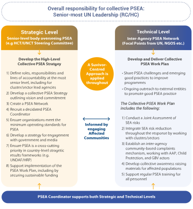
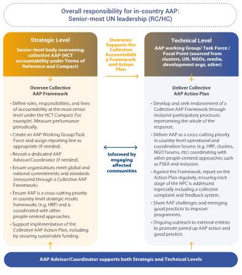
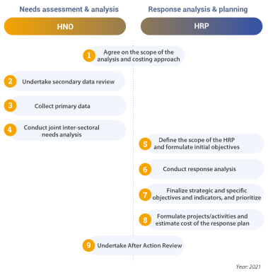
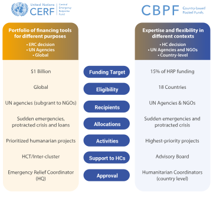

Bria IDP site hosts some 50,000 internally displaced people, most of whom have been displaced several times due to repeated attacks. 2019, Central African Republic. Photo: OCHA/Florent Vergnes
With the increasing impacts of climate change compounding existing risks and fragility globally, it is a priority for the UN Resident Coordinator (RC) to ensure that appropriate humanitarian coordination mechanisms are planned as part of ongoing preparedness efforts. Effective preparedness means that when an international response is required, these mechanisms can be stood up quickly. This will not involve setting up completely new structures, but rather addressing gaps where these exist, or adapting existing structures to the specific needs of the humanitarian response. Humanitarian coordination mechanisms should support and complement national preparedness and response efforts led by the Government.
Key roles of the RC and HC
In-country Humanitarian Architecture
As part of preparedness efforts, and in consultation with all relevant actors, lead reviews of existing coordination architecture and develop or revise an effective and inclusive inter-agency coordination mechanism – ensuring complementarity to Government coordination structures.
Establish the appropriate humanitarian architecture (Humanitarian Country Team, clusters/sectors, inter-cluster/sector coordination group and subsidiary bodies) for effective response at the national and subnational levels.
Engage and maintain dialogue with national and local authorities and all relevant humanitarian actors, including international and local/national NGOs, on the role of humanitarian coordination to support national response.
Lead consultations on the development of a comprehensive and inclusive needs-based strategy for the humanitarian response. This could be articulated through a funding appeal (a Humanitarian Response Plan or a Flash Appeal).
Lead and coordinate inter-agency advocacy and fundraising efforts.
NGO Coordination
Open direct dialogue with relevant NGO coordination forums, ensuring to include both local/national and international NGOs, as well as women-led organizations.
Include representatives from NGOs (local/national and international) in the Humanitarian Country Team or other strategic bodies, where appropriate.
Cash Coordination
Ensure that cash coordination mechanisms are well resourced, representative of all sectors and promote activities in line with the overall priorities of the response.
Support the use of cash and voucher assistance (CVA) as part of the response, encouraging collaborative approaches. Consider CVA as a default response option, where feasible and appropriate, and the potential link with national social protection mechanisms and anticipatory financing mechanisms.
Community Engagement
Ensure community engagement is coordinated through formal architecture and supports delivering on an agreed Collective Accountability Framework.
Ensure a mechanism is in place to support Protection from Sexual Exploitation and Abuse (PSEA).
Support complementary approaches to protection, disability inclusion, gender, age, mental health and other cross-cutting issues.
Setting up an Effective Country-Level Humanitarian Coordination Architecture
In consultation with national authorities and humanitarian actors, and taking into account the context, available resources, and existing capacities and mechanisms, the RC is responsible for determining the most adequate and efficient coordination ‘architecture’. Its purpose is to ensure that (i) all actors34 responding to the emergency work together to achieve shared, strategic objectives, and ii) that humanitarian programmes are designed and delivered in a principled, effective and complementary manner. Effective coordination helps to avoid a chaotic and fragmented response.
34 It is critical for the RC to have an understanding of the mandates of actors involved in the response (community-based organizations, faith-based organizations, national and foreign militaries, local/national and international NGOs, the national and foreign private sector, the Red Cross/Red Crescent Movement (IFRC, ICRC, National Societies), UN entities, and neighbouring and other States) and their adherence to humanitarian principles. Although each has different mandates, accountabilities and cultures, the RC must strive to ensure coordination among them.
The types of coordination mechanisms established, their duration and their location (national, subnational) depend on the scale and complexity of the response as well as the type of crisis. To help ensure buy-in, it is important for RCs to focus on the added value of coordination. Overall, coordination structures should be light and streamlined to improve how humanitarian actors collectively meet the priority needs of affected people, without duplication or gaps.
The coordination architecture for international responders builds on and complements existing national- and local-level mechanisms, instead of creating separate or parallel structures.35 Contextual and flexible approaches will allow for the adaptation of coordination structures over time, including an increased role for local actors, national authorities and/or development partners as the situation moves from emergency to recovery.
35 In conflict situations in which the State is a party to the conflict, humanitarian coordination may need to happen with limited State involvement to ensure that affected people have access to humanitarian protection and assistance, independent of whether the State controls the territory on which they reside.
It is essential that the RC maintains dialogue with national counterparts as the humanitarian architecture is being established, and ensures they are supportive of the international mechanisms for preparedness and response to humanitarian emergencies and understand how international roles and responsibilities complement national efforts. Transparency is essential for maintaining effective coordination and collaboration with national counterparts leading the response efforts.
Typically, the humanitarian architecture includes one, some or all of the following:36
36 In refugee situations or mixed situations involving IDPs and refugees, UNHCR plays an integral role in the humanitarian architecture – see section A.3.
Humanitarian Country Team (HCT): chaired by the RC, the HCT is responsible for the strategic coordination of the international response and preparedness.
Clusters or Government-led sectors: composed of operational UN agencies/NGOs, the Red Cross and Red Crescent Movement, and often Government actors. These bodies are responsible for coordinating service delivery and identifying gaps around designated sectoral priorities.
Inter-Cluster or Inter-Sector Coordination Group (ICCG/ISCG): comprised of sector/cluster coordinators, the ICCG/ISCG ensures coordination among the sectors for a more coherent response and to support the HCT by highlighting key operational concerns.37
Information Management Working Group (IMWG): comprised of OCHA, sector/cluster, agency and occasionally Government IM officers, the group’s role is to build on existing in-country information systems and support the coordination and harmonization of the IM activities of all humanitarian partners. The IMWG supports efforts to achieve consensus on authoritative common data sets disaggregated by sex and age, administrative boundaries and operational areas.
In addition to the HCT, ICCG/ISCG and clusters, the RC, with the HCT, may establish other coordination groups – to support, for example, IM, needs assessment and analysis, CVA, risk management, the administration of country-based pooled funds (CBPFs), humanitarian access and humanitarian civil-military coordination, among others.
In setting up humanitarian coordination in a new emergency, the RC should endeavour to ensure that all UNCT/HCT members have a solid understanding of the rationale for establishing humanitarian coordination and the steps being taken to put it in place, ensuring common messaging on this issue is followed.38
38 In many cases, UNCT members may be unfamiliar with humanitarian principles and coordination mechanisms. To avoid mixed messaging coming from UNCT/HCT members, the RC, with OCHA’s support, should ensure the leadership team is well briefed on this issue and key messages are in place to answer questions from national counterparts, donors, NGO partners, and staff members.
Edward Kallon – Humanitarian Architecture
The Humanitarian Country Team
An HCT is set up at the outset of a humanitarian crisis to bring together operationally relevant actors in a humanitarian response. This will include country directors (or equivalent) of relevant UN agencies, NGOs and the Red Cross/Red Crescent Movement. The HCT is chaired by the RC (or HC, if designated) and is the highest-level international humanitarian body in the country. It is primarily responsible for strategic decision-making, and to facilitate the centrality of protection and adequate, efficient and needs-based response and preparedness. To enable effective and representative decision-making, HCT membership should be inclusive of a range of relevant stakeholders, including representatives from women-led organizations.
The UNCT and HCT coexist; they do not replace each other. The RC is responsible for ensuring complementarity between the two entities. The RC may also decide to set up a separate forum to facilitate information sharing with the broader humanitarian community or with donors.
Following its initiation, the HCT’s immediate decisions will address urgent operational humanitarian matters. The RC and HCT will need to decide quickly on which additional coordination structures and expertise, if any, are required to support the response (e.g. clusters – see below). Through the HCT, the RC is required to lead an annual Coordination Architecture Review to ensure that coordination structures in place remain appropriate and relevant to the changing context.
OCHA supports the RC throughout the process to make sure that an appropriate architecture is put in place, in line with the guidance and procedures of the Inter-Agency Standing Committee (IASC). OCHA’s role is to support the RC in his/her coordination function as secretariat to the HCT, ensuring that effective links are made with other coordination bodies such as the ICCG/ISCG.
HCT checklist for RCs and HCs
At the outset, ensure HCT members understand the rationale for shifting to a humanitarian response and what this entails in terms of the pace of response, new coordination mechanisms, expertise and adherence to humanitarian principles. To facilitate this shift, seek OCHA support to draft key messages for the HCT.
Clearly outline the role and Terms of Reference of the HCT and the responsibility of members to contribute to the HCT and to pursue collective outcomes.
Ensure inclusive national and international NGO representation in the HCT by supporting NGOs to implement transparent selection processes.
Ensure national NGOs adequately represent diverse operational organizations and are supported to assume this leadership role.
Ensure Government authorities are supportive of the set-up of the HCT and the related humanitarian coordination architecture.
Ensure the HCT develops an annual workplan that addresses the centrality of protection and has been committed to by HCT members.
Establish a separate forum for regular engagement with donors to ensure they are kept informed of the response and can share their views and concerns.
39 Note that in some contexts the use of the term ‘cluster’ may be undesirable; the term ‘sector’ is used instead.
Clusters bring together UN and non-UN partners actively involved in delivering humanitarian action. Their primary function is to coordinate actions within particular humanitarian sectors (e.g. health, food, nutrition) while ensuring adherence to the centrality of protection. One or more clusters may be established (‘activated’) if a context analysis deems that (i) response and coordination gaps exist in a particular sector due to a sharp deterioration or significant change in the humanitarian situation, or (ii) existing national response or coordination capacity is unable to meet needs. Clusters are intended to be temporary structures, handing over their responsibilities where/when national capacity is sufficient.
Clusters are activated in consultation with the Government and the HCT, and following the endorsement of the Emergency Relief Coordinator (ERC) and IASC. Clusters can also be established at subnational level or for a specific geographical area depending on the nature and scope of the emergency and the needs of the response.40
40 Where subnational/area-specific clusters are established, the national-level cluster normally focuses on policy issues and strategic planning, while localized clusters are tasked with local planning and implementation.
Each cluster is chaired by a Cluster Coordinator, who is appointed by the cluster lead agency (CLA – see below). The Cluster Coordinator’s role is to promote an effective and coherent response by operational actors in a given sector. S/he provides leadership and works on behalf of the cluster as a whole, facilitating all cluster activities and developing and maintaining a strategic vision and operational response plan. S/he also ensures coordination with other clusters in relation to inter-cluster activities and cross-cutting issues.41
41 The CLA also appoints a Cluster Information Management Officer to work with the Cluster Coordinator to support intra-cluster coordination and, in collaboration with OCHA and through the Information Management Working Group, to contribute to inter-cluster coordination (see more information on this below).
Cluster Lead Agencies
Each cluster is led by a CLA responsible for running and staffing the cluster. The CLA is an agency/organization that formally commits to take on a leadership role within a particular sector or area of activity. CLAs/clusters are also the primary entry points for collaboration with line (sectoral) ministries, as well as the first point of call for RCs for any issues relating to their sectoral area.
The CLA serves as the ‘Provider of Last Resort’, i.e. it commits to do the utmost to ensure an adequate and appropriate response. This means calling on all relevant humanitarian partners to address critical gaps in the response and, if this fails, to commit to filling the gap itself (or advocate for resources or access to do so).All clusters have six ‘core functions’ – standardized actions against which they must deliver and monitor performance on an annual basis (e.g. supporting service delivery, informing RC/HCT strategic decision-making, planning and implementing cluster strategies).42
42 The six core functions are described in the IASC Reference Module for Cluster Coordination at the Country Level.
Humanitarian Cluster System
The RC, in consultation with the HCT, selects CLAs based on their coordination and response capacity, operational presence and ability to scale up. The selection of CLAs ideally mirrors global arrangements (see figure above); but this is not always possible, and in some cases other organizations may be in a better position to lead.43 The RC should encourage all clusters to have an NGO co-lead to enhance coordination, wherever feasible.
43 UNHCR is the CLA for the Global Protection Cluster. However, in disaster situations or complex emergencies without significant displacement, the three protection-mandated agencies (UNHCR, UNICEF and OHCHR) will consult and, under the overall leadership of the RC, agree which of them will assume the role of CLA for protection. In the case of service clusters (logistics, emergency telecommunications), the global CLA will usually take on the role of CLA at country level because service clusters require technical expertise that other agencies may not possess.
Heads of CLAs are accountable to the RC and ERC for their cluster’s performance and for ensuring that sectoral coordination mechanisms are established and properly supported. They represent both their agency and the cluster at the HCT, bringing a broader operational perspective to the table.
CLA checklist for RCs and HCs:
Remind CLAs that they are expected to represent their cluster as well as their agency.
Actively promote the shared leadership of clusters with NGOs, with clear roles and responsibilities.
Promote a field-centric approach by advocating for coordination at the subnational level, strengthening capacity where needed.
Encourage CLAs to invite their Cluster Coordinator to participate in HCT meetings where relevant to the agenda.
Impress on CLAs that they are responsible for the performance of their cluster, full staffing of coordinator and information management positions, as well as annual cluster performance monitoring.
In cases where a CLA is not adequately carrying out its responsibilities, consult the Country Director/representative of the agency/organization concerned to avoid the need to propose alternative arrangements.
Highlight the need to maintain flexible and contextually relevant coordination; remind CLAs that the HCT is required to perform an annual Coordination Architecture Review.
When two or more clusters are activated, the RC and HCT are responsible for establishing an ICCG/ISCG. The ICCG brings together all active clusters to collaborate on the operational response: closing delivery gaps, eliminating duplication and ensuring an impartial, people-centred approach. This is done by reaching a shared understanding of needs, informed by a robust protection and gender analysis, and agreeing on a joint strategy. The ICCG plays a critical role in developing the Humanitarian Response Plan (HRP)44 and informing the RC/HCT of key strategic concerns requiring resolution at the leadership level. At the same time, the HCT guides the ICCG’s priorities, offering strategic direction to enable coherence in operational response, and it tasks the ICCG as required.
The ICCG is accountable to the RC and reports to the HCT through OCHA, who chairs the ICCG. Specific working and advisory groups on cross-cutting, inter-cluster/thematic issues (such as CVA, accountability to affected people, etc.) can be established directly under (and report to) either the ICCG or the HCT.45
45 Chairs/co-chairs of such bodies are active members of the ICCG or HCT, respectively.
The ICCG provides operational direction and support to subnational coordination groups and plays a critical role in tracking and monitoring the response. Based on the context and specific coordination needs of the response, the ICCG may be replicated at subnational level and/or for a specific geographic area.
ICCG checklist for RCs and HCs
Reinforce the link with the ICCG by attending ICCG meetings on a quarterly or ad hoc basis.
Remind the ICCG members that they are expected to bring relevant strategic concerns to the HCT, based on their shared analysis.
Encourage cluster coordinators to attend the HCT where the agenda is relevant to their cluster/sector.
Convey the need for clusters and the ICCG to reinforce local capacities as part of their work with national counterparts.
Hold an annual HCT-ICCG retreat/meeting to strengthen coordination and collaboration.
Encourage the ICCG to perform the annual ICCG Performance Monitoring exercise.
Encourage clusters to perform their Annual Cluster Coordination Performance Monitoring exercise.
Case study: Coordinating a coherent and collaborative response to the Nepal earthquake
Following the Nepal earthquake in 2015, it was important for the RC/HC to react quickly while ensuring that the Government, key UN/NGO counterparts as well as (influential) Member States were all working from the same page. This required rapid and objective decision-making; not easy, given that many of the organizations involved were under pressure from their HQs to raise their profile and visibility within the response – with media coverage and fundraising in mind.
The RC/HC, in collaboration with the HCT, decided to adopt a two-tiered cluster response: activating the clusters required for the immediate 30-day critical response (shelter/non-food items, health, food security, logistics/communications, water and sanitation, and protection), with the remaining clusters in preparation mode. This helped to focus the daily HCT meeting and manage the initial response.
Key donors were quickly brought on board to help develop and deliver a credible and focused response strategy as well as push back on ‘big agency’ pressure. Daily preparatory meetings took place with the RC/HC office, essential staff and the key response donors (including USAID/OFDA, DFID/Chase and EU/ECHO). As a result, the response benefited from strong donor support (political, advocacy as well as financial) and was able to harness the strength, energy and influence of donors to deliver more focused and time-bound assistance. These donor meetings were instrumental in shaping the agenda, reinforcing priorities and creating operational discipline in the daily HCT meeting. Critically, they helped to strengthen coordination, especially with large organizations pushing for a different and mandated response.
NGO Coordination
Local, national and international NGOs deliver a significant part of humanitarian assistance, and they are integral partners in ensuring humanitarian action is coordinated and effective in reaching people most in need.
NGOs primarily coordinate their operational planning with other stakeholders through the clusters or sectors. The RC can help to ensure cluster leads are proactively inclusive of NGOs and support their participation, including through the use of local languages if needed. As described in the CLA checklist above, the RC should encourage all clusters to have an NGO co-lead to enhance coordination and contextualization of the response.
At a response-wide level, NGO networks or forums play an important role in supporting and coordinating the work of NGOs. NGO forums are voluntary groupings of local, national or international NGOs, or a combination of these. In protracted settings or where disasters are recurrent, NGO forums often become well established over years or even decades, and they establish independent relationships with Government, donors and other partners. In other settings, forums may emerge, scale up or down, or disband, depending on the requirements of NGOs working in the response.
NGO forums provide their members with a range of support, including coordination, collective advocacy, partnership-building, capacity strengthening and strategic representation. This diversity in size, representation and focus means investing in effective engagement with NGO forums is vital. In most cases, they are supported by a small secretariat team and led by an elected governing body or steering committee. It is important for the RC to have a good understanding of the membership and representative scope of the major NGO forums, and to consider them strategic allies in the overall coordination architecture.
Role of the RC and HC
The RC should ensure, wherever possible, that NGO forums are represented in the HCT, alongside individual NGOs, so that collective NGO positions or perspectives inform the priorities of the overall response. It is important to note that no UN agency, including OCHA, has responsibility for NGO coordination. Therefore, there is no substitute for direct and sustained engagement with NGOs – both from the RC and through the HCT.
The RC should champion and advocate for the importance of NGO coordination with the host Government and donors. NGO forums are often informal groups without legal registration, and they face associated risks due to Government actions that may restrict the space for NGOs to assemble freely and establish suitable governance and accountability mechanisms. To function effectively, NGO forums require adequate resourcing. This may be provided in part by their members, but often additional support from donors is needed. Advocacy from the RC can prove invaluable in this regard.
Resources
The global consortiums ICVA and InterAction provide ongoing support to national-level NGO forums and can be a valuable resource for NGOs and the RC if support or advice is needed.
The use of cash voucher assistance (CVA) is growing across humanitarian contexts, offering a response modality that can help meet basic needs, supplement household incomes, reinvigorate local markets, promote financial inclusion, protect livelihoods and help local economies to recover. Where CVA constitutes, or has the potential to constitute, a significant proportion of the response, the RC and HCT may consider the need to establish a dedicated Cash Working Group (CWG) under the ICCG/ISCG.46 Where a humanitarian response is established in a context where a CWG already exists, it should be supported to link into the relevant response architecture.47 Any actor(s) that is able to support cash coordination across all sectors can lead or co-lead the group – the agreed leadership structure of each group (co-chairs, chairs or leads) will depend on the context and available capacity. Leadership arrangements must offer dedicated capacity for the function, where possible, ensure coordination independent of agency or sector mandates, and uphold humanitarian standards and principles. Leadership should be of sufficient seniority to engage with the ICCG/ISCG, HCT and other relevant forums; be able to inform and contribute to strategic decision-making; offer a diverse set of competencies, including technical cash expertise; and prioritize the role of local actors wherever feasible.
47 Including response mechanisms for IDPs and/or refugees.
Cash coordination activities – supporting both sectoral and multipurpose cash assistance – must be in line with the overall intersectoral operational priorities of the response (as set by the ICCG or ISCG). Given the inherent benefits of CVA as one of the modalities as part of the humanitarian response and its potential to link to longer-term development, it is important to establish a common understanding of the feasibility and appropriateness of using CVA in general, and multipurpose cash in particular; the potential for linking humanitarian CVA with national social-protection mechanisms while leaving no one behind; and the use of CVA as part of anticipatory financing mechanisms.
Efforts to ensure a collaborative and coherent approach should be encouraged to better assist affected populations in a principled and dignified manner. This should be done in a way that improves complementarities, synergies and accountabilities among response actors.48 Additionally, a range of technical measures may also support greater coherence in the implementation of the cash response, such as developing a minimum expenditure basket, collaborating around the use of financial service providers, and harmonizing transfer rates, among others.
48 Numerous collaborative approaches for CVA include the UN Common Cash Statement (UNCCS) and the Common Cash Delivery (CCD), among others.
Role of the RC and HC
The RC should promote a common understanding of the feasibility of different response options as part of strategic planning processes, including advocating for the consideration of CVA as a default response option alongside in-kind items and services, where feasible and appropriate. Where appropriate, the RC should also advocate for stronger links between humanitarian cash actors and national social-protection mechanisms, by leading efforts to coordinate with development actors (including the World Bank) and national Governments around a common vision, objectives and workplan. This includes promoting the consideration of CVA as part of anticipatory financing mechanisms, where feasible and appropriate. The RC should ensure that cash coordination mechanisms are well resourced, representative of all sectors and promote activities in line with the overall priorities of the response.
The HCT, ICCG and other relevant coordination groups must ensure that international humanitarian action in support of national capacities is people-driven and accountable – as mandated in the HCT Terms of Reference. This could involve, where appropriate, establishing a Community Engagement/Accountability to Affected Populations (AAP) Working Group linked to the in-country coordination architecture. This group would take the lead in delivering and reporting on the country-level action plan to operationalize the Collective Accountability Framework. In the absence of a dedicated technical working group, the responsibility should be assigned to an alternative body such as the ICCG. Community engagement mechanisms, whatever form they take, should harness and coordinate the complementarity of approaches to PSEA, protection, disability inclusion, gender, age and other cross-cutting issues.
Humanitarian, Development and Peace Collaboration (HDPC)
RCs are increasingly exploring ways of improving collaboration between humanitarian, development and peace actors due to the recognition that humanitarian crises have development and political solutions that need to be coordinated by increasing alignment on analysis, planning, programming, financing and coordination. This has gained traction, especially since the 2016 World Humanitarian Summit, and most recently reiterated in the 2020 Quadrennial Comprehensive Policy Review of UN system operational activities.
HDPC is framed in a highly context-specific manner – there is no ‘one-size-fits-all’ approach, though there are basic tenets to the collaboration that can be applied in most, if not all, countries with a HRP. The types of coordinating mechanisms established may depend on existing planning processes and frameworks (such as Humanitarian Needs Overviews, HRPs, UN Sustainable Development Cooperation Frameworks, national development plans, bilateral strategies, etc). The extent of HDPC will also depend on the type and severity of the emergency; in situations of acute armed conflict, where saving lives and protection is the overriding priority, humanitarian-development collaboration and its links to peace may be more limited.
As set out in General Assembly resolutions, UNHCR is mandated to lead the refugee response, including carrying out sectoral inter-agency coordination, contingency planning, response and resource mobilization and finding durable solutions. As such, it is the lead agency accountable for refugee protection and seeking solutions within the UN system and engaging a wider array of stakeholders. Importantly, UNHCR also has a supervisory role: it is the UN entity accountable for ensuring States’ adherence to internationally accepted standards vis-à-vis refugees and stateless people and for strengthening State protection capacities.
Refugee responses are protection focused and multisectoral, geared to allow refugees to exercise their legal rights deriving from international refugee law. Being outside their home country means that refugees often face increased difficulty in meeting basic needs, leading to increased levels of vulnerability.
Within a country context, the UNHCR Representative speaks for the High Commissioner on matters pertaining to UNHCR’s mandate and exercises the coordination responsibilities. In situations involving large refugee movements, the Representative coordinates UN and NGO partners in articulating a Refugee Response Plan, which serves as an advocacy and joint resource mobilization tool.
Global Compact on Refugees
In 2016, the world began to look afresh at refugee responses and agreed in the New York Declaration49 to adopt more comprehensive approaches that engaged a broader array of stakeholders. The subsequent implementation of the Comprehensive Refugee Response Framework – now embedded in the Global Compact on Refugees (GCR)50 – also informs UNHCR’s coordination accountabilities. The GCR recognizes the importance of national ownership and the need to employ a multi-stakeholder and partnership approach in which UNHCR, consistent with its mandate, plays a supportive and catalytic role. It provides a blueprint for Governments, international organizations and other stakeholders to ensure that host communities get the support they need and that refugees can lead productive lives.
In line with the GCR, UNHCR is committed to work with RCs, HCs and UNCTs/HCTs to advance national development priorities and ensure no one is left behind. This collaborative work includes encouraging development actors to intervene on behalf of refugees and in support of host communities, as well as to work with States to include refugees in national development plans.
Coordination arrangements
When a complex emergency takes place and a UNHCR-led refugee response is under way or imminent, UNHCR leads refugee response planning in a manner that is coherent with the overall humanitarian response led by the HC. This is set out in the 2014 ‘Joint UNHCR-OCHA Note: Mixed situations: coordination in practice’,51 reconfirmed by the ERC and the UNHCR High Commissioner on 5 June 2018. It provides a detailed overview of the division of responsibilities between the UNHCR Representative and the HC in these situations.
Extract from the Joint UNHCR-OCHA Note: Mixed situations – coordination in practice
Leadership
The Humanitarian Coordinator, through leadership of humanitarian coordination in complex emergencies and disasters, facilitates the following collective outputs:
Shared situational analysis
Common vision and strategic plan for the humanitarian response
Common advocacy messages
System-wide resource mobilization and allocation of pooled funds
The UNHCR Representative leads the provision of international protection, humanitarian assistance and durable solutions for refugees (including in complex emergencies involving refugees) and is responsible and accountable for contributing, as a member of the HCT, to the delivery of the IASC collective outputs listed above. S/he shall also:
Share a situational analysis of the refugee situation.
Ensure a common vision and strategic refugee response plan, coherent with other humanitarian and development strategies and programming.
Exercise the High Commissioner’s supervisory responsibility and advocate for the protection of and assistance and solutions for refugees.
Refugee response plans
UNHCR leads the development and implementation of and resource mobilization for inter-agency refugee response plans (country specific) and/or regional refugee response plans (to respond to a significant refugee influx into several countries). These response plans are a coordination tool that establishes a common strategy and provides the host Government and donors with an overview of the inter-agency response, including the resource requirements. In the contexts of HRPs, a dedicated refugee response chapter is included.
Comprehensive response framework
As requested by the host country, UNHCR supports Governments to establish and support national, regional and international arrangements for the application of the comprehensive refugee response framework. These frameworks should engage a broad range of stakeholders as envisaged by the GCR and will be context specific.
As recognized in the GCR, population movements are not necessarily homogeneous and may be of a composite character. Some may be large movements involving refugees and others on the move; other situations may involve refugees and IDPs; and, in certain situations, external forced displacement may result from sudden-onset natural disasters and environmental degradation.
In mixed situations involving refugees and IDPs, as defined by the UNHCR-OCHA Joint Note, the HCT is responsible for developing a common strategic response plan to address issues around internal displacement, ensuring alignment and complementarity with response plans coordinated by UNHCR.
Migrants – whether living in, transiting through or returning from a country affected by a humanitarian crisis – are among the most vulnerable during conflicts and natural disasters. Furthermore, large-scale mixed flows can create conditions that require life-saving humanitarian assistance. However, the current humanitarian coordination system, largely framed around the IASC cluster system and the Refugee Coordination Model, does not systematically account for migrants’ needs, including when in mixed settings with internally displaced populations, asylum seekers and refugees. In 2016, the United Nations Summit for Refugees and Migrants was convened to discuss a more robust international response to large movements. It resulted in the New York Declaration for Refugees and Migrants, and set in motion the development of two compacts: the Global Compact for Safe, Orderly and Regular Migration (GCM), which reiterated the need for enhanced cooperation on international migration in all its dimensions,52 and the Global Compact on Refugees (see above).
52 With a view to supporting the implementation of the GCM, the UN established a Network on Migration to ensure effective, timely and coordinated system-wide support to Member States. In carrying out its mandate, the Network will prioritize the rights and well-being of migrants and their communities of destination, origin and transit. IOM serves as the coordinator and secretariat of the Network, which, as of January 2021, includes 43 regional and country-level coordination platforms established under the leadership of RCs.
Migrants are identified as a population of humanitarian concern in an increasing number of HRPs, refugee response plans, refugee and migrant response plans and other types of inter-agency strategic planning processes. However, the humanitarian coordination approach specific to those crises has been largely addressed through ad hoc structures coordinated at the country or regional level.
In line with a growing number of precedents, effective responses are based on the needs and concerns (as opposed to the status) of migrants and other affected populations, the capacity of Governments to respond and the operational context. Migrants’ needs should be mainstreamed into existing humanitarian coordination frameworks before considering alternative arrangements. As a last resort, dedicated coordination mechanisms can be established, using a migrant (or migrant and refugee) response platform model, to ensure an effective and holistic response to meet migrants’ protection and assistance needs.
These platforms cover the specific needs of migrants and people of concern who are not accounted for in existing in-country coordination mechanisms. In mixed settings involving migrants, refugees and potential asylum seekers, IOM alongside UNHCR coordinate with other UN agencies and stakeholders to ensure that assistance is complementary with broader humanitarian response operations.
Case study: Coordinating the response to the outflow of migrants and refugees from Venezuela
Political instability, a deteriorating socioeconomic situation, and growing insecurity and violence in Venezuela continue to put pressure on an already stressed population. As a result, as of the end of 2020, more than 5.4 million refugees and migrants from Venezuela had left their country. Of these people, 4.6 million had moved to 17 middle-income Latin America and Caribbean countries, leading to the biggest population movement in Latin America’s recent history.
Since 2018, at the UN Secretary-General’s request, IOM and UNHCR have co-led an Inter-Agency Coordination Platform to oversee the analysis, strategic planning and operational response to migrants and refugees from Venezuela. The platform works closely with RCs/HCs, who are responsible for setting the overall national strategic vision, ensuring coherence and synergies in development and humanitarian action, and in UN coordination, strategic policy, partnerships and investments around the Sustainable Development Goals.
In addition, UNHCR and IOM have appointed a joint special representative, tasked with promoting a coherent and harmonized regional approach in coordination with national Governments, international organizations, non-traditional actors and other relevant stakeholders, and advising RCs/HCs, UN principals and their respective senior managers on overarching strategic, contextual and situational considerations.
The objectives, roles and responsibilities of the Regional Coordination Platform for Refugees and Migrants from Venezuela are mirrored at the country level through national/subregional platforms also co-led by IOM and UNHCR. Regional, subregional and national platform coordination teams continuously work with RCs and their teams to:
Provide updated information on the platform’s activities and plans.
Collect inputs for strategic planning and overarching policy matters.
Involve RCs in the platform’s discussions with political actors and, in particular, national Governments.
Strengthen the links between the emergency response and in-country development agendas.
2. PUTTING PEOPLE FIRST
Placing people at the heart of humanitarian action is critical for supporting principled action, ensuring access for all to assistance and protection, addressing violations and enhancing accountability. In leading and coordinating the humanitarian action of relevant organizations at country level, the RC is responsible for ensuring that protection and accountability are at the forefront of humanitarian response and preparedness.
Key roles of the RC and HC
Advocating on Protection
Lead and coordinate high-level humanitarian advocacy efforts to secure better protection outcomes for crisis-affected populations, and ensure regular engagement with the wider UNCT to ensure complementary advocacy activities and messaging, as appropriate.
Promote respect for human rights, refugee law and IHL by all parties, including non-State actors, through bilateral dialogue and using private and/or public advocacy, as appropriate.
Lead negotiations with parties to conflict to ensure humanitarian access to affected populations and access to services for people in need; preserve humanitarian space; and enhance respect for international law, humanitarian principles and core protection principles.
Ensure the implementation across all sectors.
Prioritizing Protection from Sexual Exploitation and Abuse
Create and maintain an environment that prevents sexual exploitation and abuse.
Ensure that PSEA is integrated into coordination structures across humanitarian, development, peace and political operations.
Ensure that a country-level action plan to address sexual exploitation and abuse (SEA) is developed and implemented.
Ensure that a quality, victim-centred assistance mechanism is operational.
Implementing a Collective Accountability Framework
Initiate and guide an HCT Collective Accountability Framework that coordinates and integrates community information and feedback into response analysis, planning, implementation and monitoring – which, in turn, informs decision-making and adaptive programming.
Ensure financial and human resourcing for collective information provision and complaint-and-feedback systems, including for complaints on sexual exploitation and abuse.
Work with the HCT and other relevant stakeholders to ensure independent and participatory processes for monitoring, evaluating, verifying and learning from humanitarian response operations – making sure that these inform future actions.
Prioritizing the Prevention of Gender-Based Violence (GBV)
Ensure IASC GBV guidelines are implemented across all sectors to mitigate risks and ensure the application of ‘do no harm’ principles.
Advocate with Government officials on the prevention of and response to GBV.
Prioritize life-saving GBV specialized services, and ensure investment in sustainable GBV response services through GBV subsector referral pathways, including as a means to strengthen SEA victim assistance.
Advocating on Protection
Persuasive advocacy can be an effective tool to encourage the relevant authorities to better fulfil their protection-related obligations and responsibilities under international law. In accordance with the IASC Policy on Protection in Humanitarian Action (2016) and the IASC Principals’ Statement on the Centrality of Protection (2013), all humanitarian advocacy efforts should contribute to action that enhances the protection of affected people and ensures that the rights of affected people and the obligations of duty bearers under international law are understood, respected, protected and fulfilled.
The RC is responsible for leading and coordinating the high-level advocacy efforts of relevant organizations in country to address protection concerns and secure better protection outcomes for crisis-affected populations. This includes bilateral quiet or private engagement and/or public advocacy, as appropriate, to promote compliance with international humanitarian law, refugee law and human rights law; to raise awareness of the specific vulnerabilities and needs of affected people, including IDPs; and, as part of negotiations with relevant parties, including non-State actors, to secure free, timely, safe and unimpeded humanitarian access.
>See section B.3 for details on negotiating humanitarian access.
At the same time, the RC needs to strike a balance between the possible impact of engaging in public advocacy to address protection risks and violations, and the potential consequences for continued access to affected persons. The HCT must therefore consider and agree on how best to leverage the different roles and capacities of different entities, and on how to use regional and global actors and processes to ensure that advocacy takes place to support the achievement of protection outcomes and to prevent and address violations of international law.
The UN Secretary-General’s Call to Action for Human Rights (2020), which builds on the Human Rights up Front initiative, calls on UN leadership to consider and act upon information and analysis of human rights concerns and violations, and adopt an approach that advances human rights and prioritizes the protection of civilians. In doing so, they should leverage the capacities of the entire UN system. RCs can call on the support of the ERC and the High Commissioner for Human Rights (HCHR) to use their positions to address the Security Council, Human Rights Council and other avenues to draw the international community’s attention to deteriorating situations and protection risks. Furthermore, the ERC and the HCHR, in their capacity as members of the UN Secretary-General’s Executive Committees, the Policy Committee and Chief Executive Board, can use their positions to initiate a concerted response from within the UN system to protection concerns as they evolve. In recognition of the collective responsibility of all humanitarian actors to contribute to protection outcomes, the RC is expected to foster collaboration among HCT members to undertake joint and complementary advocacy actions to address protection concerns where appropriate/feasible, based on a comprehensive and shared analysis of the protection situation provided by the Protection Cluster and other sources. This is to ensure that the HCT speaks with one voice on core protection priorities (often articulated in the HCT Protection Strategy),53 while agencies continue dedicated advocacy on mandate-specific issues. Together with the HCT, the RC is responsible for facilitating and coordinating engagement and advocacy with a diverse range of humanitarian and non-humanitarian actors in addressing protection concerns (including development and peace operations). Given the collective responsibility on protection, the RC should encourage non-protection agencies to integrate the centrality of protection across their work in order to achieve collective protection outcomes.
53 Global Protection Cluster provisional guidance note on HCT Protection Strategy on HCT Protection Strategy (see resources).
Matthias Zana Naab – Protection
WHAT ARE PROTECTION OUTCOMES?
A response or activity is considered to have a protection outcome when the actual and potential risk – including violations of IHRL and IHL – to affected persons is prevented, reduced, mitigated or ended. The reduction of actual and potential risks occurs when threats and vulnerability are minimized and, at the same time, the capacity of affected persons is enhanced – or the capacity and willingness of national authorities to meet their human rights obligations is enhanced. Protection outcomes are the result of changes in behaviour, attitudes, policies, knowledge and practices on the part of relevant stakeholders, including national authorities. Some examples of protection outcomes include:
Parties to conflict release child soldiers and issue explicit prohibitions, reinforced by disciplinary measures, to prevent child recruitment by their forces.
National legislation formally recognizes land tenure entitlements of displaced populations.
Safe access to alternative sources of cooking fuel reduces exposure to the threat of sexual violence.
Community-based preparedness and early warning mechanisms support timely evacuation of especially vulnerable individuals from areas where they are at risk of violent attacks.
Community leaders renew and promote societal norms that condemn GBV and its perpetrators.
Community-level protection committees influence security forces to change their conduct in and around civilian areas through ongoing liaison and negotiation.
Government authorities support the voluntary movements of affected persons by ensuring full access to information that enables free and informed decision-making.
In contexts where there is significant displacement, the UNHCR Representative has the primary responsibility for advocacy with the host Government and all relevant actors on refugee issues, as set out in the Joint UNHCR-OCHA Note on Mixed Situations – Coordination in Practice (2014). In such contexts, the RC supports UNHCR and ensures other humanitarian advocacy initiatives are complementary and supportive.
Contributing to and engaging systematically with protection and human rights monitoring mechanisms can inform analysis, programming and advocacy messages. These include protection monitoring conducted by the Protection Cluster, the monitoring and reporting mechanism on grave violations committed against children (MRM – SCR 1612), monitoring, analysis and reporting arrangements on conflict-related sexual violence (MARA – SCR 1960), displacement tracking matrices, and OHCHR human rights monitoring and fact-finding missions.
The IASC Operational Policy and Advocacy Group is a forum to support the IASC’s normative and strategic policy work, including on system-wide policy matters with a direct bearing on humanitarian operations. It is supported by the IASC Results Group 3 on Collective Advocacy (RG3), which focuses on improving the effectiveness of collective advocacy efforts, including on key areas of work such as counter-terrorism, IHL, negotiations with non-State armed groups, food security, climate change, etc. It is also supported by the IASC Results Group 1 on Operational Response (RG 1), which focuses on supporting system-wide implementation of the IASC Protection Policy.
At headquarters level, various actors can mobilize support, staffing and funding, as well as engage in supportive advocacy. These actors include the ERC, the HCHR, the High Commissioner for Refugees, the IASC Principals, the Emergency Directors Group, the UN Human Rights Mechanisms (including the treaty bodies and special procedures) and the Global Protection Cluster.
The inter-agency ProCap project can deploy senior protection advisers to support the RC’s office – for example, to help with the development and implementation of an HCT Protection Strategy.
Case study: Advocating for the protection of civilians in Fallujah, Iraq
In 2016, Iraqi security forces sought to recapture Fallujah and its surrounding suburbs from ISIL. More than 100,000 civilians were in areas affected by fighting, raising serious and sensitive concerns about the protection of civilians and the conduct of hostilities. The HC worked with a wide range of key political, military and diplomatic decision makers to seek measures to protect civilians inside Fallujah and those attempting to escape.
This included engaging in direct, real-time diplomacy with Iraqi leaders and security forces to minimize casualties and prevent violations, while reaching out through the media to influence the behaviour of parties to the conflict.
Prioritizing Protection from Sexual Exploitation and Abuse
Under the standard RC and UNCT, and HC and HCT responsibilities on PSEA, each country should already have a PSEA structure in place (see figure below). This includes an inter-agency PSEA Network, a PSEA Coordinator, and a PSEA Strategy and associated Workplan. The UNCT/HCT acts as a Steering Committee for the PSEA Strategy.
The RC and HC are accountable for delivering on collective PSEA commitments in country. Specific responsibilities for PSEA are articulated in the Management and Accountability Framework of the UN Development and Resident Coordinator System, and in the 2015 Principals’ Statement on PSEA.
However, how these responsibilities are carried out may be different during an emergency. The coordination bodies the HC will oversee will change, for instance, when the cluster system comes into play. The influx of new actors and pressures to deliver quickly may lead to increased risk of SEA. At the outset of the emergency, an SEA risk assessment should be conducted and prevention and mitigation measures identified and implemented. Referral pathways and complaint mechanisms will need to be adapted to take account of the new operating context. Incoming responders should be made aware of standards of conduct. RCs and HCs are encouraged to recruit a full-time PSEA Coordinator to advise and support on their leadership role.
In-Country PSEA Programme

When designated as the HC, RCs have a particular coordination role, leading and coordinating the response efforts of the UN and relevant humanitarian actors, including NGOs and Red Cross/Red Crescent counterparts. The IASC Plan for Accelerating PSEA in humanitarian response includes a country-level framework, which RCs may use to ensure that a comprehensive strategy is effectively implemented. The framework includes three strategic objectives: encouraging victims/survivors54 to come forward and speak up, improving quality victim/survivor-centred assistance, and strengthening vetting, investigations and disciplinary measures. The RC also facilitates links between humanitarian and development programming, including the integration of the UNCT’s work with UN peacekeeping or political missions. The RC is therefore uniquely positioned to facilitate strategic information sharing on prevention of and response to SEA across the full range of development, humanitarian and mission contexts, ensuring that PSEA is raised upfront in all discussions, as early as possible, with all partners at all forums.
54 The term ‘victim’ is more commonly used in legal and medical contexts, while the term ‘survivor’ is preferred in psychological and social support sectors as it implies resilience.
Emphasis should be placed on outreach to local communities and authorities to ensure awareness raising and to establish, with the participation of the local population, context-appropriate reporting/community-based complaints mechanisms, and ensure the availability of appropriate holistic services for victims/survivors.
Case study: Implementing collective commitments on PSEA in Mozambique
Strong leadership and a clear prioritization of PSEA from the onset of an emergency are critical for establishing an accountable PSEA programme. In Mozambique, one of the first actions taken by the newly appointed RC was to issue a statement affirming collective commitments to protect the affected population from SEA and initiate the structures to follow through on these.
The RC’s communication to the whole humanitarian community explicitly included a reminder of their individual and collective responsibility for PSEA, along with the immediate actions that each head of organization should take, including:
Ensure that all staff have completed PSEA training.
Provide a clear message to staff, related personnel and the affected community that SEA is unacceptable.
Provide clear guidance to all staff and related personnel on codes of conduct, including for PSEA.
Nominate a PSEA focal point for their office.
In addition, the PSEA Task Force is developing clear referral pathways for SEA complaints and victim/survivor assistance based on the IASC Best Practice Guide for Inter-Agency Community-Based Complaints Mechanisms.
Implementing a Collective Accountability Framework
A Collective Accountability Framework provides the conceptual structure for contextualizing and operationalizing AAP commitments and standards into appropriate response-wide activities, enabling them to hear and act upon the voices of people in a coordinated manner – including for SEA.
A Collective Accountability Framework is not designed to inform individual agency or programme accountability approaches; rather, it provides the basis for working collaboratively and delivering on five key outputs:
Output 1: Coordinated needs assessment and analysis reflects the perceptions of information needs and communication preferences of all affected community groups.
Output 2: The Humanitarian Response Plan is inclusive of the voices of all affected community groups.
Output 3: A resourced country-level approach coordinates information provision, community feedback systems and participation.
Output 4: Response implementation is coordinated with and driven by informed community participation and feedback systems and is monitored and adjusted as needed.
Output 5: Coordinated, independent and participatory evaluation, verification and learning from response operations informs future actions at all levels.
Resources
The IASC Results Group on Accountability and Inclusion provides response-wide guidance, tools and technical support through the following:
The diagram below provides an overview of the in-country structure for implementing the Collective AAP Framework and Action Plan.
In-Country Collective Accountably to Affected People (AAP)

Case study: Developing collective accountability and PSEA initiatives across the humanitarian system in South Sudan
Strong leadership on community engagement has been critical in grounding the South Sudan operation in a people-centred and accountable approach. The establishment of an inter-agency Community Communication and Engagement (CCE) Working Group and the system-wide PSEA Task Force demonstrates the overarching leadership in these complementary and important areas. The CCE Working Group led the integration of AAP considerations in the 2020 HNO and HRP, using data from the 2019 REACH Community Perception Study and input from clusters. The PSEA Task Force led on the risk analysis for SEA, using data from a recent SEA risk assessment.
The South Sudan CBPF funded collective accountability initiatives in 2018 and 2019, with a focus on improving coordination and feedback mechanisms across the whole humanitarian system. In 2021, AAP will continue to be integrated into the HPC, with clusters monitoring whether people feel informed and consulted. A common AAP performance indicator selected by clusters for protection, WASH, education, camp coordination and camp management, emergency shelter and non-food items, nutrition, food security and livelihoods, and health will allow clusters to monitor progress across geographical areas and demographic groups, track community engagement at cluster and inter-cluster levels, and garner key lessons.
The CCE Working Group will continue to provide a forum for a strategic, collective review of community perceptions of humanitarian aid delivery (against key intersectoral and cluster objectives), enabling clusters to adjust their response accordingly. In 2021, the group will explore how best to utilize intersectoral and cluster-level community data, including developing analysis to be presented to the Inter-Cluster Working Group and HCT that can be used to inform their understanding of communities’ prioritization of needs, assess the quality of aid delivery and inform decision-making.
Prioritizing the Prevention of Gender-Based Violence
The RC, in her/his capacity to lead and coordinate the response efforts of the UN and humanitarian partners, is responsible for strategic information sharing and advocating for the prevention of and response to GBV across the full range of relevant actors.
Humanitarian actors at all levels need to better prioritize GBV in order to create and implement scaled‐up responses that better address women’s and girls’ rights and needs. They must assume GBV is occurring and threatening affected populations, treat it as a serious and life-threatening problem, and take actions regardless of the presence or absence of concrete ‘evidence’. All survivors, regardless of perpetrators, need access to GBV referrals and, as such, the HCT should promote investment in existing GBV structures.
The IASC Guidelines for Integrating Gender-Based Violence Interventions in Humanitarian Action outline the specific methods, tools and recommendations for humanitarian actors and communities affected by armed conflict, natural disasters and other humanitarian emergencies to coordinate, plan, implement, monitor and evaluate essential actions for the prevention and mitigation of GBV across all sectors of humanitarian response.
In addition, the GBV Accountability Framework provides a guide for humanitarian actors, including humanitarian leaders and HCTs, on the steps they can take to combat GBV within their mandates. By taking on the actions in the Framework, the humanitarian system as a whole can ensure that every humanitarian response, from the earliest phases of a crisis, provides safe and comprehensive life‐saving services for GBV survivors and mitigates the risks of GBV.
3. NEGOTIATING AND FACILITATING HUMANITARIAN ACCESS
Humanitarian access is critical for establishing operations, assessing needs, monitoring assistance, moving goods and personnel to where they are needed, and enabling affected people to benefit from assistance and access basic services. Facilitating and coordinating efforts to establish and maintain safe, timely and unimpeded access is central to the mandate of RCs.
Key roles of the RC and HC
Promote and facilitate a strategic and coordinated approach to access.
Ensure that access constraints are identified and monitored.
Advocate for safe, timely and unhindered access.
Regularly engage on issues related to bureaucratic and administrative impediments.
Present the issue of access as linked to a population’s humanitarian needs rather than to a particular territory.
Make it clear to all parties that access negotiations do not confer legitimacy or recognition of control over a population or territory.
Establish high-level dialogue with military actors relevant to the specific context (natural disaster or conflict).
Ensure coherence among humanitarian actors on the use of military assets and engagement with parties to conflict.
Denise Brown – Negotiating Access
What is Humanitarian Access?
Humanitarian access refers to the ability of humanitarian actors to reach crisis-affected people, as well as the affected population’s ability to access humanitarian assistance and services. Rapid and unimpeded access is a fundamental prerequisite for effective humanitarian action. An understanding of the international legal framework (including IHL, IHRL and UN General Assembly resolution 46/182) is critical for framing the access conversation.
The RC is responsible for leading the development of a strategic and coordinated approach to access. Joint reflection and common strategies are critical. The RC may decide to establish dedicated coordination structures to support analysis and assessment of humanitarian access, which could include, when relevant and/or requested by the HCT, a Humanitarian Access Working Group.
The RC has a key role in building a coherent evidence-based narrative on access, built on quantitative and qualitative analysis and systematic monitoring of access constraints. Encouraging HCT members to report on access constraints (including bureaucratic impediments) is critical in this regard. The RC is also responsible for advocating for safe, timely and unhindered humanitarian access with all parties (including non-State armed groups). This involves engaging in high-level humanitarian advocacy and negotiations, and promoting compliance with and respect for humanitarian principles and relevant international law.
Case study: Facilitating access for a life-saving humanitarian convoy in Syria
In February 2019, after more than two months of advocacy and negotiations, the UN successfully carried out a large-scale humanitarian convoy in Syria, providing life-saving assistance to more than 40,000 people in Rukban in the south-east of the country. The area in question was largely inaccessible; only one humanitarian operation had previously been conducted. The complex aid operation lasted nine days and consisted of 133 trucks with more than 300 staff, volunteers and commercial suppliers. The HC’s role was crucial in coordinating the operation, along with a number of UN agencies, INGOs and national partners (including the Syrian Arab Red Crescent).
Bureaucratic and Administrative Impediments
Bureaucratic and administrative impediments refer to administrative practices and policies that affect humanitarian organizations’ ability to reach people in need in a timely and unfettered manner. These may be intentionally restrictive (such as restrictions on the import of aid equipment or security equipment required for the response) or unintentionally burdensome (such as onerous donor funding application and reporting processes or cumbersome administrative procedures to approve or register organizations). Humanitarian action can be impeded by the administrative practices adopted by host Governments, non-State armed groups controlling territory where people in need reside, Government donors, and partnership agreements between UN or INGO donors and local NGOs.
NGOs tend to be disproportionately affected by bureaucratic and administrative impediments. Foreign NGO workers are often subject to residency, labour and other requirements of the host State. The lack of privileges and immunities means that INGOs often need to comply with more stringent administrative requirements to operate legally and safely.
In many countries, civil-society organizations are regulated by domestic legislation and operate within a national legal framework. Ideally, these frameworks help streamline bureaucratic and administrative processes for NGOs; however, in some contexts they have the opposite effect, at times contrary to international law and humanitarian principles. Common impediments include convoluted or opaque processes for NGO registration, withholding or delaying visa approvals for international staff, or restrictions on the movement of relief items into and within the country. The need for some form of travel authorization to conduct work in specific areas is a common means of limiting both the provision of assistance and accurate needs assessments by NGOs. In some cases, these also affect UN and ICRC operations.
Role of the RC and HC
The RC should be prepared to speak out and lead collective action to counter the imposition of bureaucratic and administrative impediments by the Government, non-State actors and donors. This could involve regular discussions in the HCT on developing a common understanding of the range, nature and impact of bureaucratic and administrative impediments, and an associated action plan to address them. To be effective, these efforts should engage with and learn from the NGO community, particularly by engaging NGO forums, to ensure efforts are informed by current operational realities. The RC should ensure partners’ coordinated and systematic reporting of bureaucratic and administrative impediments through Humanitarian Access Working Groups. Where efforts at the national level may not be sufficient to resolve such impediments, the RC could request support from the ERC and IASC Principals for high-level advocacy to resolve the impediments and facilitate effective humanitarian response.
Resources
Under the IASC Operational Policy and Advocacy Group Results Group 1 on Operational Response, NGO consortiums InterAction and ICVA lead a Bureaucratic and Administrative Impediments Working Group, which provides learning, resources and guidance for the humanitarian community, including HCTs.
Negotiation Analysis and Strategy
The practitioner’s manual on Humanitarian Negotiations with Armed Groups provides a nine-step generic framework that can be applied to humanitarian negotiations (see below).
It is important to be aware that, while negotiations can help facilitate humanitarian access, they can also have unintended or unanticipated consequences for humanitarian organizations:
Negotiating with armed groups can generate or reinforce a perception among other armed groups, the population, the host Government and/or other States that the humanitarian organization is biased or lacking impartiality.
Entering into negotiations with an armed group can also have potentially serious consequences for the security of the negotiators themselves, their colleagues, other humanitarian organizations and the populations they serve.
Host-country Governments, other States, regional organizations and third parties external to the humanitarian negotiations may attempt to exert pressure on or sanction the humanitarian organization in order to limit or cease their contact with armed groups, or they may attempt to influence the negotiations in pursuit of political objectives. Host-country Governments may see the negotiations as legitimizing particular armed groups (especially when these are labelled as terrorist groups), or as recognizing, de facto, their territorial control.
Armed or Military Escorts for Humanitarian Convoys
Armed escorts should be used only as a last resort. Their use can weaken perceptions of the impartiality of humanitarian actors and threaten the operational independence of humanitarian action. Therefore, if all deterrence measures have failed, the humanitarian community should work together on creating alternatives to the use of armed escorts.
Escorts are used at the Designated Official’s discretion to help mitigate the risks associated to humanitarian movements, such as harassment and armed attacks. Military escorts include UN forces conducting peace operations (governed by Security Council decisions), other international forces or State forces.
The deployment of armed escorts is subject to a security risk assessment/security risk management process55 that considers, but is not limited to, the following criteria:
Sovereignty: national authorities or the local controlling authority are unwilling or unable to provide a secure environment.
Need: the level of humanitarian need is such that the lack of humanitarian assistance would lead to unacceptable human suffering.
Safety: armed or military escorts can provide the credible deterrent needed to enhance the safety of humanitarian personnel and the capacity to provide assistance without compromising the security of beneficiaries and other local populations.
Sustainability: the use of armed or military escorts does not compromise the longer-term capacity of humanitarian organizations to fulfil their mandate safely and effectively.
Time-bound: the use of armed escorts should be limited in time and an exit strategy should be planned from the onset.
Humanitarian and military vehicles should remain distinctly separate. Other than the vehicles, weapons and personnel providing the escorts, the convoys should remain exclusively humanitarian. It is important to bear in mind that non-UN organizations have their own rules and decision-making processes for the use of armed or military escorts for humanitarian convoys. NGOs are never bound by the security framework of the UN.
Deployed UN humanitarian civil-military coordination officers (see below) can act as an intermediary between the humanitarian community and the military when requests for military or armed escorts are considered.
Case study: The perils of using armed escorts in the Democratic Republic of the Congo (DRC)
In some parts of DRC, the UN Mission for the Stabilization of the Democratic Republic of the Congo (MONUSCO) is perceived as a party to the conflict, supporting the national military. The MONUSCO Force Intervention Brigade is engaged in offensive operations against some non-State armed groups, especially in North Kivu Province, and is regarded with suspicion in areas under the control of such groups. Using armed escorts to access these areas increases the risk of attacks. Non-State armed group commanders claim that humanitarian actors are usually granted access to assist the populations under their control if unescorted. As a result, only the few organizations that are negotiating with all parties and not using escorts have access to the controlled areas, which limits assistance considerably. In addition, the inconsistencies in security risk management within the humanitarian community often blur the distinction between escorted and non-escorted assistance and can expose those opting out of the escort model to greater risk.
Humanitarian Civil-Military Coordination
Humanitarian Civil-Military Coordination (UN-CMCoord) is the essential dialogue and interaction between civilian and military or armed actors in humanitarian emergencies. Through systematic engagement, UN-CMCoord aims to promote humanitarian principles, avoid competition for resources, minimize inconsistency and, where appropriate, pursue common humanitarian goals.
UN-CMCoord can be applied across all contexts, from natural disasters to conflicts and complex emergencies, including migration crises, pandemic response and in preparation for the potential effects of climate change. Conflicts and complex emergencies have become increasingly protracted and require sustained and substantive dialogue with parties to conflict. Many of these emergencies are characterized by persistent failures to protect civilians, multiple constraints to humanitarian access, and the need to engage with a myriad of armed actors with different profiles and motivations.
UN-CMCoord can support RCs in a number of ways:
Establishing and sustaining dialogue with armed actors
Facilitating humanitarian access and access negotiations
Advocating for the protection of civilians
Providing guidance on the appropriate use of armed escorts
Establishing and maintaining humanitarian notification systems56
Influencing combatant behaviour and upholding IHRL and IHL obligations
Analysing non-State armed groups to support improved access
Providing guidance on operating in counter-terrorism environments
Providing guidance on the appropriate use of foreign and domestic military and peacekeeping assets
Facilitating military capacities to address the effects of climate change and climate change planning
Facilitating pandemic planning and response
56 Systems to share the geographic coordinates of aid operations with military forces, as a means of reducing civilian casualties and protecting humanitarian missions in areas of active hostilities.
Role of the RC and HC
The RC may be the primary interlocutor with the most senior levels of national militaries, armed elements and other parties to conflict, and/or the senior leadership of domestic and bilateral military support in natural disasters. The RC is responsible for providing direction across the HCT on engaging with military and armed actors. This involves ensuring coherence across a wide range of issues, including, but not limited to, the use of armed escorts; negotiating humanitarian access with armed actors; ensuring positive protection outcomes; influencing the behaviour of armed actors (reminding them of their obligations to IHL) in an effort to prevent the deliberate targeting of health facilities, schools and other protected sites; and the appropriate use of military assets to fill an identified gap in the humanitarian response.
Resources
OCHA’s Civil-Military Coordination Service (CMCS) is the designated UN focal point for UN-CMCoord, supporting field operations as well as regional and global activities. CMCS deploys UN-CMCoord capacity to address needs in sudden-onset emergencies as well as in complex and protracted crises. CMCS also supports the channelling of requests for foreign military assets.
CMCS is the custodian of global UN-CMCoord guidelines and handbooks:
The UN-CMCoord training programme equips humanitarian, civil and military actors with the knowledge and skills to effectively and appropriately interact in humanitarian contexts
Najat Rochdi – CivMil
Case study: Institutionalizing UN-Civil-Military coordination in humanitarian responses in the Philippines
The After-Action Review of Humanitarian Civil-Military Coordination during the Typhoon Haiyan response in 2014 put forward six recommendations, one of which was the need to create an understanding and awareness of the UN-CMCoord concept among senior civilian and military officials and executives of the National Disaster Risk Reduction and Management Council (NDRRMC) and the Armed Forces of the Philippines (AFP).
The HC in the Philippines, upon assuming his post in 2015, established an ongoing relationship with the NDRRMC leadership as part of his strategic engagement on preparedness and response. Building on previous efforts, the HC convened a learning event for selected executives and senior officials from the NDRRMC and the AFP. This then fed into the development and refinement of NDRRMC-AFP response mechanisms, which were tested and enhanced in the 2016 earthquake response exercise of the International Search and Rescue Advisory Group. These tools continue to be used in Government-led responses to natural disasters and human-made emergencies.
Sanctions and Counter-terrorism Measures
The implementation of sanctions and counter-terrorism measures targeting local actors by the host State, donors or other States can have an important impact on humanitarian operations and access. Sanctions regimes may prohibit or require authorization (‘licences’) for certain humanitarian activities, or for the export of items and services necessary to humanitarian operations (which often entails lengthy, cumbersome and complex procedures). Humanitarian organizations and private partners may incur heavy penalties in case of aid diversion to sanctioned entities. As a result, private sector organizations (including banks) may be reluctant to provide services in support of humanitarian operations in countries affected by sanctions. Donors and, in some instances, host States have adopted a zero-tolerance policy on aid diversion to sanctioned groups and individuals (including through funding cuts, no-contact policies with certain groups, requests for information on beneficiaries, beneficiary vetting or prohibitions on implementing programmes in certain areas).
In some contexts, these measures have resulted in major delays or even the cancellation of programmes; restricted key humanitarian activities (e.g. the impartial provision of medical care, engagement with sanctioned groups for humanitarian purposes or protection activities for detainees); prevented access to areas where sanctioned groups have influence; or restricted access to local vendors, contractors and implementing partners. Humanitarian staff have also faced intimidation, threats and other forms of violence following accusations of supporting sanctioned groups.
Role of the RC and HC
RCs have a key role in documenting how sanctions and counter-terrorism measures affect the operations of humanitarian organizations in the HCT and sharing this information with OCHA HQ to inform potential advocacy for remedial measures. RCs also have a responsibility to advocate with relevant interlocutors – host Governments and/or donor States and other Member States – to ensure that sanctions and counter-terrorism measures do not prevent timely humanitarian access and impartial, needs-based humanitarian assistance. RCs are encouraged to seek support, advice and guidance from OCHA HQ on these sensitive matters.
4. IMPLEMENTING THE HUMANITARIAN PROGRAMME CYCLE
The Humanitarian Programme Cycle (HPC) is an operational framework developed by the IASC. It sets out the sequences of actions that should be taken to prepare for, manage, deliver and monitor collective humanitarian responses. It details the processes for developing the evidence base, brings key actors together to determine a collective response, and ensures that programmes adapt to changing circumstances and respond to the needs of affected populations. Essentially, it helps RCs to answer four basic questions: Who needs what and when? Where are they? How is this best done? Who will do it?
Key roles of the RC and HC
Initiate the HPC, starting with an analysis of the scope and severity of the emergency.
Establish an Assessment and Analysis Cell (in sudden-onset emergencies) or an Assessment and Analysis Working Group (or an Information Management Working Group with analysis capacities) as part of inter-agency coordination mechanisms, at the outset of the HPC.
Initiate a review of secondary data, including information from the preparedness phase and initial feedback from affected populations, national authorities and implementing partners.
Ensure agencies, clusters/sectors and organizations have the requisite capacity (staff and resources) for dedicated joint needs and response analysis and planning.
Emphasize the importance of data sharing and agency and cluster/sector engagement in joint analyses.
Ensure engagement between humanitarian and development partners, and complementarity of the HRP with development activities – with explicit links to collective outcomes, where these have been agreed.
Promote a people-centred approach that is inclusive of all segments of the population, particularly vulnerable groups, integrating gender analysis, disability inclusion and the needs of older persons.
Ensure the timely endorsement of analysis outputs, response plans and monitoring frameworks; make sure that monitoring systems are in place that allow for ongoing analysis of changes in humanitarian conditions, needs and risks, together with progress towards outcomes.
Elements of the Humanitarian Programme Cycle
The HPC consists of five steps, with each step logically building on the previous and leading to the next (see figure below). Successful implementation of the HPC is dependent on comprehensive emergency preparedness, effective coordination with national/local authorities and humanitarian actors, and systematic information management.
Humanitarian Programme Cycle
In 2019, the HPC templates and guidance were revised in line with consolidated best practice and commitments made at the World Humanitarian Summit and Grand Bargain
HPC Step by Step

They reflect the complexity of the environments in which humanitarian practitioners work and the depth of analysis that is required and expected.
The enhanced HPC approach emphasizes the importance of a people-centred, intersectoral analysis of the humanitarian consequences of a crisis and the associated response, helping programmes to arrive at a prioritized and evidence-based plan.
A needs analysis provides the evidence base and foundation for the HPC. The analysis should always be based on a desk review of existing secondary data, from which a quick situation analysis can be derived, as well as an understanding of the information gaps that exist. A decision can then be taken on whether and how primary data collection should proceed.
Sudden-onset disasters
In sudden-onset disasters and in contexts that may lead to an IASC Scale-Up activation,57 a Multi-Cluster/Sector Initial Rapid Assessment (or alternative rapid assessment based on coordinated assessments) is implemented. This consists of a situation analysis within the first 72 hours, followed by a multisector assessment and report within the first two weeks. This inter-agency approach enables actors to reach, from the outset, a common understanding of the situation and its likely evolution. Based on the assessment’s findings, humanitarian actors can develop a joint plan (including a Flash Appeal), mobilize resources and monitor the situation. The results of the rapid assessment also inform and support the design of subsequent needs assessments and analysis, which are often more detailed and operational in focus.
The situation analysis provides an initial assessment of the scope and severity of an emergency, and an initial understanding of the required response. Based on a review of secondary information by the HCT (led by the RC), it draws on baseline information gathered during the preparedness phase and initial information from affected populations, national authorities, civil-society organizations, other implementers and clusters/sectors. This is the first step towards setting overall objectives for the response plan that takes shape during the first 30 days of a large sudden-onset emergency. The situation analysis brings together the RC, HCT and clusters/sectors around a shared analysis of the impact of the crisis. It also enables the IASC Principals to take key decisions relating to scale, leadership and required capacities. It is instrumental in initiating a collective and coordinated process of assessment and decision-making, recognizing that local ownership and national engagement from the start are crucial to the quality of the response.
Protracted or slow-onset crises
In protracted or slow-onset crises, which characterize most humanitarian situations, needs assessments and analysis are anchored within the Humanitarian Needs Overview (HNO). The IASC Operational Guidance on Coordinated Assessments outlines the agreed approaches and protocols that inform a coordinated assessment approach. It recommends that the RC establishes coordination mechanisms for cross-cluster/sector needs assessment and analysis, such as an Assessment and Analysis Working Group.
Once a secondary data review has been conducted, the Assessment and Analysis Working Group, in collaboration with the ICCG, and with guidance from the HCT, will decide whether a joint needs assessment (such as a multisectoral needs assessment) is required, or whether harmonized in-depth sectoral assessments better serve the information requirements.
Using the Joint Intersectoral Analysis Framework (JIAF),58 the data and information from assessments can be used to answer key questions about the humanitarian conditions: which geographical areas and population groups are most affected or at risk as a result of the crisis; who and how many people face severe, critical and catastrophic needs; what are the immediate and underlying structural causes; and how are the needs expected to evolve. The JIAF helps develop a comprehensive understanding of how sectoral needs and factors correlate and compound each other, and how they change over time. It is a valuable tool for analysing risk and potential shocks, helping to predict the evolution of a humanitarian situation. This will then inform planning for the most likely scenario in the HRP. The JIAF can be used to inform decisions on prioritization, preparedness, anticipatory action and disaster risk reduction (DRR).
58 The JIAF is a set of protocols, methods and tools used to classify the severity of humanitarian conditions (including humanitarian needs) resulting from a shock event or ongoing crisis; identify the main drivers and underlying factors; and provide actionable insights for decision-making.
The analysis should link as well as contribute to the in-depth and integrated analysis of protection risks, violations and harms that informs humanitarian action and response – as set out in the IASC Policy on Protection in Humanitarian Action59 – as well as ensure proper and integrated analysis of impacts on more vulnerable segments of the population, based on (at the very least) factors related to age, gender, disability and other diversities.60
Humanitarian analysis should also inform Common Country Assessments (CCA). This helps build an evidence base for humanitarian-development collaboration, highlighting critical areas that require longer-term development interventions to reduce humanitarian needs, risks and vulnerability. HNOs as well as other needs and vulnerability assessments and analyses are useful inputs into the CCA. Conversely, they can also benefit from recent CCAs and, where available, multi-stakeholder, multidimensional risk analysis, to help incorporate risk drivers in needs assessment and analysis. Granular information on people’s vulnerabilities, risks and humanitarian needs can enrich broader social, institutional, economic and political analyses conducted by development actors.
Based on the assessment of humanitarian needs and the situation analysis, partners then collaborate to develop a response plan. Depending on the context, this will result in one of the following products:
In a sudden-onset disaster where there is a rapid deterioration in humanitarian conditions, a Flash Appeal may be launched within 72 hours. This covers a period of up to six months. In situations where the needs are expected to require sustained assistance, the Flash Appeal can be followed by a full HRP.
In a protracted crisis, or one that requires a response for 12 months or longer, an HRP is developed.
In some instances, where the situation is sufficiently stable to allow for multi-year planning, a Multi-Year Humanitarian Response Plan is used.
The HRP is primarily a management tool for the RC and HCT. It can also be used as a means of articulating and communicating the scope and scale of the crisis and response (to donors and the public) and, as such, can act as a resource mobilization tool. The HRP articulates the HCT’s common vision for in-country humanitarian action, the strategy for achieving that vision, and the actions to be taken to implement the strategy, as well as agreement on the monitoring of the collective response. Contributions against the HRP (and Flash Appeal) are recorded and tracked by the Financial Tracking Service (FTS).
>See section B.7 for details on resource mobilization and the FTS.
OCHA facilitates the development of the HRP in consultation and close collaboration with the HCT, ICCG and relevant humanitarian partners. The elaboration of an HRP is directly linked to the analysis undertaken through the HNO. All people in need identified in the HNO should be considered from the outset of the planning process, given that their needs are humanitarian by definition and their severity has been ascertained by the analysis in the HNO.61 Based on the type and severity of needs identified in the HNO, a response analysis is used to review the appropriateness, relevance and feasibility of different interventions and response modalities – such as cash, voucher and in-kind assistance.
61 A needs analysis should include causes and driving factors, severity, magnitude, trends and projections, as well as people’s own prioritization of their needs (as identified through AAP initiatives). See the HPC 2021 Response Analysis and Prioritization Guide for more details on this (see resources).
The HRP defines outcome-level objectives that articulate the intended improvements in people’s lives and livelihoods (that ensure full respect for their rights). ‘SMART’ objectives are used to identify specifically how the results will be achieved. Links with collective outcomes as part of humanitarian-development collaboration – and, where appropriate, collaboration with peace actors – are also made explicit if they exist. Where possible, complementary strategies are identified and referenced in the HRP and other strategic plans, such as the UN Sustainable Development Cooperation Framework, Integrated Strategic Frameworks, and Government national plans, including national DRR strategies and/or the relevant strategic plans of financial institutions and bilateral donors. Some countries, often under national leadership, have articulated a set of collective outcomes to measurably reduce risk and vulnerability in areas such as food security and nutrition, health, basic social services, and durable solutions to internal displacement, among others. These are then referenced and linked to appropriate strategies in the HRP and equivalent development plans.
The HPC in refugee situations
In humanitarian refugee crises, UNHCR leads the development and implementation of and resource mobilization for inter-agency refugee response plans (see section B.1 (Refugee Response Plans)). Refugees are included in HNOs, and in the contexts of HRPs a dedicated refugee response chapter is included in the HPC templates. UNHCR is responsible for providing the chapter information. The same applies for other emergency humanitarian appeals, such as Flash Appeals.
>See section B.9 for details on Humanitarian-Development-Peace Collaboration, collective outcomes and durable solutions for internal displacement.
Monitoring is ongoing throughout the HPC. It is used to track the evolution of the situation and needs, the implementation of the humanitarian response and the effectiveness of aid delivery. It also considers the diversity of the affected population and their perspectives on the response. The enhanced HPC places increased emphasis on monitoring to ensure that the response remains appropriate to evolving needs and to track progress against agreed outcomes. Based on the results of the monitoring process, humanitarian partners are advised to revisit planning assumptions and adapt the response accordingly. To fulfil this function, monitoring should:
Start from a clear idea of what to monitor and why.
Aim for as ‘real time’ as possible, rather than occasional one-shot events or documents.
Cover the full scope, from needs to results.
Support analysis that will enable decision-making.
5. Managing the Emergency Response (Tools and Services)
In leading and coordinating the emergency response, the RC can call on a wide range of tools and services for additional support, many provided through OCHA. It is important to ensure that, where possible, international assistance complements and works alongside national response mechanisms.
Key roles of the RC and HC
In the event of a sudden-onset crisis or a rapid deterioration in humanitarian conditions, lead an initial assessment of the humanitarian situation in consultation with the HCT.
Liaise with OCHA and the ERC to help determine whether the initial assessment warrants a Scale-Up activation.
If required, request additional humanitarian capacity through OCHA, both for coordination and specialist technical support.
Determine, in consultation with OCHA, the Terms of Reference for international responders.
Where appropriate, ensure that incoming international responders support or complement national/local response capacities and mechanisms.
In the event of a disaster, contact the relevant national authority to determine any damage to infrastructure that might affect the delivery of relief assets or assistance.
Emergency Declarations
Scale-Up Protocols
An IASC Scale-Up activation is a system-wide mobilization in response to a sudden-onset and/or rapidly deteriorating humanitarian situation in a given country, including at the subnational level, where capacity to lead, coordinate and deliver humanitarian assistance does not match the scale, complexity and urgency of the crisis. This exceptional measure is only applied for a time-bound period of up to six months. Only in very limited circumstances is an additional three-month extension considered.
The procedure activates mechanisms and tools to:
Ensure that the IASC system delivers effectively in support of national authorities and existing capacities, and monitors its own performance.
Ensure that adequate capacities and tools are in place for empowered leadership and coordination of the humanitarian system.
Engage IASC member organizations and global cluster lead agencies in establishing the required systems and mobilizing the necessary resources to contribute to the response, as per their respective mandates.
The Scale-Up activation is issued by the ERC, in consultation with the RC and IASC Principals, based on an analysis of the following criteria: scale, complexity, urgency, capacity and risk of failure to deliver at scale to affected populations. In the case of an infectious disease event, the IASC Level 3 activation procedure for infectious disease events applies (see chapter D for more details on this).
A Scale-Up activation indicates the scale at which the humanitarian system needs to step up its efforts and to activate internal procedures to better respond to the crisis. It does not indicate a ranking of the severity of the crisis, or that the crisis should, at this stage, be prioritized for funding by the international community.
A Scale-Up activation is primarily a mechanism for emergency response. That said, humanitarian and development partners can use other mechanisms to invest in preparedness, operational readiness, early warning and early action to limit the number of emergency situations in which Scale-Up activation would be required (see below for details).
If additional humanitarian capacity is required, OCHA can mobilize a number of mechanisms (both internal and external) to provide immediate and longer-term assistance. These include coordination and specialist surge capacity from regional offices, HQs and other country offices, the UN Disaster Assessment and Coordination (UNDAC) team, the Stand-By Partnership Programme, the Protection and Gender Standby Capacity Projects, and environmental and private sector experts. The OCHA country and regional office, through the Operations and Advocacy Division in New York and the Response Support Branch in Geneva, will initiate procedures to mobilize these resources.
UN Disaster Assessment and Coordination
The UNDAC system is a roster of disaster managers and humanitarian aid professionals from Governments, regional organizations, UN agencies and cluster lead agencies. The teams comprise 3 to 30 experts, depending on needs, and can support any phase of the HPC. UNDAC deploys with operational partners who provide support for logistics, communication, base camps, mapping and GIS capacities.
UNDAC is managed by OCHA in Geneva. It deploys teams in the immediate response phase (the first four weeks) in support of the UN system and the affected State. In emergency situations, an UNDAC team is mobilized and deployed within 48 hours of a request. Unlike other emergency surge mechanisms, UNDAC embeds thematic experts from a wide range of different organizations (many of them from Member States). Their ability to work with the affected Government’s response mechanisms ensures effective coordination between national civil protection authorities and the incoming international responders. OCHA deploys teams (at no cost) following a request from the RC.
UNDAC teams can also be deployed in advance of a crisis to evaluate and strengthen national response preparedness, including national policies and legislation, and support capacity-building activities and training for emergency management. The RC determines the Terms of Reference for an UNDAC mission. These should focus on strengthening or complementing local response coordination capacities in any of the following areas (for up to 30 days):
The coordination of the international response through an Emergency Operation Centre or On-Site Operations Coordination Centre (OSOCC)
Technical support for UN-CMCoord, environmental risk analysis, security, etc.
Assessments and analyses (humanitarian needs, environmental issues, infrastructure damage, etc.)
Information management and reporting
Operational coordination for urban search-and-rescue activities through the International Search and Rescue Advisory Group (INSARAG) managed by OCHA’s Emergency Response Section
Logistical support such as base camps and telecommunications
Case study: UNDAC support to the Beirut port explosion
In 2020, at the height of the COVID-19 pandemic, the UNDAC system was mobilized to support the HC for Lebanon and the Lebanese Government following major explosions at the Beirut port. The UNDAC team was assembled and deployed within hours of a request. The team’s composition reflected the expertise required to meet the mission’s Terms of Reference. UNDAC operational partners worked together to provide mapping and data analysis support, both on the ground and remotely through an Assessment and Analysis Cell. The team supported the coordination structure established by the HCT, which included a variety of UN agencies, urban search-and-rescue teams, local NGOs, the Lebanese Red Cross, donor missions and municipal engineers, among others.
Capacity for Disaster Reduction Initiative (CADRI)
CADRI is an inter-agency mechanism that provides technical support and tools to develop national capacities for DRR, including preparedness for emergency response. Typically, support is provided in three phases: DRR capacity assessment, the development of a national plan of action, and support in implementing the plan. RCs request support from CADRI directly.
Single Expert Surge Capacity
Stand-By Partnership Programme (SBPP)
OCHA can deploy experts to support the RC through surge capacity rosters or standby partnership arrangements, but only if the deployment is humanitarian focused and placed under OCHA supervision. SBPP deployments usually range from three to six months and commonly include expertise in humanitarian coordination, information management, access negotiations and civil-military coordination. SBPP also deploys expertise in community engagement, cash coordination, public communication, managing environmental emergencies, logistics, needs assessments and protection. RCs signal to OCHA (through their regional office) the support required (at no cost).
United Nations Environment Programme (UNEP)
In the event of industrial accidents, fires, chemical spills and other types of environmental emergencies, the RC (and/or the State) may request assistance from OCHA. In partnership with UNEP, it can provide technical expertise and advice and, in specific circumstances, mobile equipment for on-site sampling and analysis. Experts can be deployed within 24 to 48 hours (at no cost).
Inter-agency Protection and Gender Standby Capacity Projects (ProCap/GenCap)
To help ensure the centrality of protection and gender in humanitarian action, the ProCap and GenCap projects work to strengthen leadership, programmes and localization strategies. The projects are implemented through three key modalities: deployments, capacity-building and sharing of best practice. Direct support is provided to operations through the deployment of highly skilled and experienced senior advisers, who work closely with the RC and HCT to find solutions to complex challenges.
ProCap deploys senior protection advisers for up to three years to strengthen inter-agency protection capacity and leadership. Areas of work include the development and implementation of comprehensive protection strategies and associated accountability systems (e.g. in situations of internal displacement). Senior protection advisers also promote synergies with development and peace actors, especially in protracted displacement contexts.
GenCap deploys senior gender advisers for up to three years to strengthen inter-agency capacity and leadership for delivering on commitments to gender equality and women’s empowerment in humanitarian action. Areas of work include assisting in developing strategic documents, ensuring improved gender analysis for enhanced gender equality programming, and activities to strengthen the skills and accountabilities that place gender at the centre of humanitarian operations.
ProCap and GenCap engage in a diverse set of crises: sudden-onset emergencies, protracted situations and transitional contexts. Support from ProCap and GenCap can be requested directly from the project (procapgencap@un.org). All costs are charged to the projects, with the exception of expenses for office space and internal travel while on mission.
Myrta Kaulard – ProCap/GenCap
Emergency Logistics and Airport Efficiency
Prior to a significant weather event, such as a cyclone, the RC’s office should monitor the situation and contact the Civil Aviation Authority to find out if there are any contingency plans for closing the airport and, if so, when it is likely to reopen. Likewise, after an earthquake, the RC’s office should establish contact with the relevant national authority to determine the damage to infrastructure and any effects on the operational capacity of airports and other ports of entry.
The sudden influx of relief goods during an emergency is often problematic if national authorities continue to apply normal customs clearance procedures. This may take considerable time and delay the response, especially when sensitive or restricted goods are involved. It is therefore important to encourage Governments, especially those of disaster-prone Member States, to develop and disseminate clear operational guidance in advance, to expedite the clearance of all types of emergency relief goods (telecommunications equipment, medicines and medical equipment, etc.). Setting up a ‘one-stop shop’ at major customs entry points to speed up the clearance of life-saving equipment has often proven effective.
Programme Criticality Assessment (PCA)
The Programme Criticality (PC) Framework is a common UN system policy for decision-making on acceptable risk. It establishes guiding principles and a systematic structured approach to ensure that activities involving UN personnel can be balanced against security risks.62 PCAs are mandatory in contexts of high or very high risk. In principle, this is undertaken jointly by all UN stakeholders, under the RC’s leadership. A PCA can also be used to inform business continuity planning in contexts without high security risk, as happened during the COVID-19 pandemic. The RC has overall responsibility for ensuring PCAs are completed, in place, in line with the PC Framework, and kept up to date. In a deteriorating situation, where the programmatic conditions have changed significantly, the RC should consider a full revision or a light review of a current/valid PCA.
6. Establishing Systems for Information Management (IM)
IM is an essential component of any humanitarian response, enabling and facilitating shared analysis and decision-making. A clear and simple IM strategy ensures that the right information is provided to the right people at the right time, and that all relevant actors are working with the same or complementary information and baseline data.
Key roles of the RC and HC
Ensure effective collaboration between the HCT, the ICCG and the Information Management Working Group (IMWG) in support of the HPC.
Ensure that Common Operational Data sets (CODs) are maintained according to COD guidance (the RC is responsible for the final endorsement of CODs).
Ensure that all organizations are sharing critical data sets.
Look to the IMWG to develop and/or provide the following:
- Inter-cluster/sector information management coordination structures
- Agreed humanitarian indicators and plans for the HNO and response analysis
- Data-sharing mechanisms and schedules
- Inter-agency assessment and analysis coordination and support
- Contact lists and Who does What, Where (3W) products
- CODs
Information Management Working Group
OCHA is responsible for convening an IMWG to support the work of the RC and HCT in delivering humanitarian assistance. The IMWG serves as a forum for strategic and technical discussions and collaboration on IM issues relating to humanitarian response and preparedness, as set out by the IASC Operational Guidance on responsibilities of cluster/sector leads and OCHA in Information Management (2008). The RC is responsible for ensuring that the HCT establishes and maintains close links with the ICCG and the IMWG to ensure that they work together to support the HPC. Given IM’s crucial role in the HPC, RCs should make sure that the IMWG is actively involved in HCT meetings and that IM officers are not used solely to provide technical support.
Each IMWG faces context-specific challenges and must develop its own Terms of Reference in collaboration with all its members. IMWGs normally focus on data standards, inter-cluster information products and services, the coordination of information for assessments and analysis, and the development and/or dissemination of CODs, indicators, web platforms and information-sharing protocols. Working group membership is defined at the country level and is largely made up of IM officers from clusters/sectors and other areas of programming. Membership can also be encouraged among IASC members with operations in country. Government representatives and domestic civil-society groups, such as national NGOs, can be encouraged to participate, depending on the agreed Terms of Reference.
The IMWG supports the ICCG with guidance on all issues relating to IM, and the IMWG Chair is a member of the ICCG. The RC should ensure meaningful collaboration between the ICCG and IMWG, with clear guidance stipulating the need for IMWG representation in all ICCG forums.
CODs are used to support the work of humanitarian actors across multiple sectors. They are authoritative reference data sets used by all actors in a humanitarian response to ensure consistency and simplify the discovery and exchange of key data.
Core CODs provide essential demographic and location data. They are critical for information and data products, as well as for effective coordination. They are the first data sets used when responding to a humanitarian situation. They form the basis of effective risk analysis, needs assessment, decision-making and reporting on all aspects of the response. Core CODs are required in all disaster-prone countries as a preparedness measure. The IMWG is responsible for working with relevant governmental entities to define, develop, maintain and endorse Core and other CODs. The RC should advocate with the Government in support of this work.
The RC has overall responsibility for ensuring that CODs are maintained according to the COD guidance and technical support package (see resources below), including final endorsement of CODs. The HCT and ICCG ensure that member organizations provide the necessary resources and support for the management of CODs. Members should be made aware of the Core CODs and the list of other CODs that have been endorsed by the IMWG and RC. The ICCG should also be part of the endorsement process (or at least made aware of it).
Data Responsibility
Data responsibility in humanitarian action is the safe, ethical and effective management of personal and non-personal data for operational response, in accordance with established frameworks for personal data protection. It is a critical issue for the humanitarian system to address, as the stakes are high. For this reason, data protection is of fundamental importance for humanitarian organizations and an essential consideration for HCTs.
Humanitarians must be careful when handling data to avoid placing already vulnerable individuals and communities at further risk. For example, disclosing the location or particular identity or affiliation of an individual or community could lead to targeted attacks, social exclusion and/or stigma, among other potential harms. In addition to avoiding harm, the safe, ethical and effective management of data has a number of benefits: it can lead to more informed and transparent decision-making, more efficient humanitarian response, and increased trust among humanitarian actors and with the people they seek to serve.
Data responsibility requires collective action that extends across all levels of the humanitarian system. This includes, for example, actions to ensure data protection and data security, as well as strategies to mitigate risks and ensure that agencies ‘do no harm’ in their use of data, while maximizing benefits in all steps of operational data management. ICRC’s Handbook on Data Protection in Humanitarian Action outlines how humanitarian organizations should comply with personal data protection standards by raising awareness of and providing specific guidance on the interpretation of data protection principles in the context of humanitarian action, particularly when new technologies are employed.
The RC is responsible for ensuring that IM platforms are established and used to support humanitarian coordination and the HPC. OCHA manages several web platforms for this purpose.
HumanitarianResponse.info – a platform for sharing operational information including programme documents, contact lists, meeting schedules, maps and infographics, an assessment registry and cluster-specific pages.
ReliefWeb – an information service for global humanitarian practitioners.
Virtual OSOCC – a platform for information exchange and the coordination of international assistance in the early phase after major disasters (used by UNDAC teams).
INFORM – a forum for developing shared, quantitative analysis relevant to humanitarian crises and disasters.
H.id - humanitarian ID – a single sign-in for many humanitarian response-related platforms.
KoBo Toolbox – a free open-source tool for mobile data collection.
HPC.tools – information services provided by OCHA that enable the humanitarian community to manage information around the HPC. The following platforms are used for these purposes:
Response Planning and Monitoring Module (RPM) manages the framework for each tracked HRP. This is where humanitarian profile data is stored, at both national and cluster levels, as well as the objectives, indicators and targets that make up the results framework. The RPM includes a monitoring component, allowing the submission of data on people reached with aid and other progress against objective and activity indicators.
HPC Projects Module facilitates the appeal-costing process by allowing project owners to submit project proposals for vetting by clusters and inclusion in HRPs. Projects can be linked to the caseloads and results frameworks established in the RPM.
Financial Tracking Service tracks, curates and publishes authoritative humanitarian financing data, with a focus on internationally coordinated appeals and response plans.
Humanitarian InSight provides a publication layer and single point of entry for all programme cycle data managed using the HPC.tools suite. It enables country operations and clusters to curate interactive online presentations of their needs, planning and monitoring information, while simultaneously providing a reference for globally aggregated data used in corporate products, such as the Global Humanitarian Overview.
Case study: Utilizing information management to develop a Resilience Framework for Burundi
In 2018/19, the OCHA Information Management Unit (IMU) and the IMWG worked closely with the RC’s Office (RCO) to develop a United Nations Resilience Framework for Burundi.
The aim was to develop a vulnerability mapping for use by humanitarian and development partners as well as donors. The mapping would be used to determine priority provinces for the implementation of humanitarian-development projects. A monitoring system for humanitarian and development funding was also part of the tools for the Resilience Framework.
The OCHA IMU/IMWG supported these efforts by:
Advising on the most suitable methodology and indicators to elaborate severity mapping.
Developing the Terms of Reference for two consultants who were hired to develop the projects.
Helping to organize a workshop to kick-start the development of the vulnerability mapping.
Organizing the collection and management of data for the mapping.
The main outcome of the collaboration was the Burundi subnational INFORM risk mapping. This is continuously being improved, and it demonstrates how regular and collegial interaction between the RC/HC/RCO and the OCHA IMU/IMWG can help address strategic and operational priorities.
7. Mobilizing Financing and Partnerships
The RC plays an important role in leading system-wide resource mobilization efforts for the humanitarian response. This entails building strong partnerships with donors, remaining abreast of humanitarian funding, and being familiar with the various funding mechanisms and resource mobilization efforts of humanitarian actors in country.
Key roles of the RC and HC
HRP Resource Mobilization and Advocacy
Keep an overview of funding requirements, unmet needs and the impact of insufficient funding.
Collect intelligence, with support from the HCT and humanitarian partners, on donor priorities and funding mechanisms (to inform fundraising and advocacy efforts).
Fundraise with donors, both locally and in capital cities, in close consultation with OCHA and the HCT.
Based on needs identified in the HNO, trigger humanitarian funding mechanisms according to the scope and type of emergency.
Central Emergency Response Fund (CERF)
Lead a CERF application (carried out by the HCT and clusters) to be submitted to the ERC.
In the event of a sudden-onset crisis or a significant deterioration in an existing emergency, request a CERF Rapid Response grant to provide seed money for life-saving humanitarian activities. If multiple emergencies occur in the same country during a short timespan, request multiple Rapid Response allocations.
Provide a brief overview of how CERF and other resources will complement each other.
Consult with OCHA and work with the UNCT/HCT for funding applications for a CERF Underfunded Emergencies grant.
Country-Based Pooled Funds
Lead processes at country level for establishing a CBPF; as custodian of the CBPF (on behalf of the ERC), decide the strategy for use of the Fund and ensure it delivers on its key objectives.
Approve the CBPF Operational Manual, including accountability mechanisms and the risk management framework for the CBPF, and ensure these are properly implemented.
Convene and chair in-country Advisory Board meetings (donors, UN agencies and NGOs).
Ensure that the Advisory Board and strategic and technical review committee(s) function in accordance with the guidelines outlined in the Global Handbook for CBPFs.
Make final decisions on projects recommended for funding, approve projects, sign agreements with implementing partners (UN agencies and NGOs) and initiate disbursements.
Lead country-level resource mobilization for the Fund supported by the Advisory Board and OCHA country office, and in coordination with relevant OCHA entities at HQ.
Ensure complementary use of CBPF funding with other funding sources, including CERF.
Resource Mobilization and Advocacy
Funding for humanitarian aid has increased in recent years, but it has not kept up with the increase in requests. HRPs are, on average, only 60 per cent funded each year. Advocacy and fundraising are therefore critical for an effective, fully resourced response.
Where an HRP or a Flash Appeal has been agreed, this and the HNO can serve as the basis for fundraising and advocacy. In some circumstances, the host country may prefer a Government appeal. If this is the case, it is important to ensure figures are coherent with those from the HCT.
Appeal mechanisms:
Flash Appeal: for acute needs for up to six months
HRP: for protracted emergencies
Funding instruments:
CERF Rapid Response window: for immediate, life-saving assistance
CERF Underfunded Emergencies window (if the country is selected by the ERC) for underfunded sectors
CBPFs (if established)
Emergency Cash Grants for immediate needs (usually do not exceed US$100,000)
CERF loan element: considered when a UN agency has received an official donor commitment but there is a delay in the transfer of funds
Resource mobilization strategies should be adapted for the different types of donors. Major donors are often keen on ‘burden sharing’ and broadening the donor base. Engaging with emerging donors and/or non-traditional donors requires a careful and sequenced approach – gaining their confidence and persuading them of the mutual benefits of contributing to humanitarian funding. RCs should be flexible and consider the different options, including non-financial partnerships or donor visibility opportunities. Where possible, the RC should aim for targeted and tailored resource mobilization, with a preference for unearmarked or softly earmarked funding. The RC should also carefully consider how to balance the financing requirements of the humanitarian response with funding that will continue to be required for longer-term development and peace interventions, which will ultimately facilitate the transition out of crises.
Key fundraising activities include visits to donor capitals, pledging conferences organized by OCHA headquarters (with carefully selected co-hosts), and briefings to donor groups in country. A number of pledging conferences are organized annually for specific crises or particular thematic areas.
Najat Rochdi – Resource Mobilization
Donor relations
Strong donor relations are key to successful fundraising and advocacy. Relationships with donors should be established at national, regional and global (capital) levels, to provide a direct link between donors and in-country UN leadership. These relationships may take multiple forms, including bilateral engagements with local embassies, monthly or quarterly in-country donor meetings or briefings, and missions to regional donor hubs or global headquarters (New York and Geneva). RC missions can be organized jointly with a Government representative (such as a minister) – if applicable and in line with a ‘do no harm’ approach – or other members of the HCT. In addition, donors can undertake field missions either individually or as a group, such as with the OCHA Donor Support Group or as part of a group of donors representing a specific region or interest.
In some countries, donors may ask to join HCT meetings; in other cases, the RC may decide to set up a separate HCT forum to facilitate information sharing with donors. The RC office should maintain communication channels with the local embassies of donor countries as well as with OCHA headquarters, which supports system-wide resource mobilization, particularly through its Partnerships and Resource Mobilization Branch.
Donor stakeholder analysis and funding priorities
It is important to have a solid understanding of individual donor priorities and funding or financing for the country/crisis in question. Analysis of donors can include information on funding trends, bilateral contributions, budgetary processes and limitations, and areas of donor interest or policy. Knowledge of donors’ positions on multi-year planning, humanitarian-development collaboration and sector priorities will enable more informed advocacy. An understanding of donor policies and priorities is key to soliciting humanitarian funding that is complementary to development aid.
An understanding of donor policies also contributes to effective resource mobilization. The RC should be familiar with the Grand Bargain commitments, discussions at the IASC and the discourse among the Good Humanitarian Donorship group. With recent efforts to improve anticipatory action, the RC can explore any anticipatory financing that may be available nationally, regionally or globally. Sharing key updates with OCHA will enable system-wide resource mobilization by the ERC, the Deputy ERC and OCHA’s leadership. The External Relations and Partnerships Section – part of OCHA’s Partnerships and Resource Mobilization Branch – is particularly important in this regard.
Partnerships with the private sector
The humanitarian community has formed many innovative partnerships with the private sector, leveraging its local and industry expertise to strengthen emergency preparedness and response. This has become more important as the number of people affected by humanitarian crises continues to increase. Partnerships with private sector organizations may be in the form of financial contributions or in-kind support, often linked to their presence in a given country. Support often increases after a sudden-onset emergency, particularly a natural disaster. Private sector engagement in humanitarian settings is often coordinated through structures such as the Connecting Business initiative (CBi), the UN Global Compact and, in some countries, private sector participation in the HCT or clusters. The RC should be familiar with UN guidelines on cooperation with the private sector and ensure due diligence is conducted before partnerships are agreed. UN agencies, NGOs and Governments generally have focal points for private sector partnerships and respective due diligence processes.
Pooled Funds Mechanisms
The effective mobilization of funds for humanitarian response is an important component of the HPC. On the ‘demand’ side, HRPs serve to formulate specific proposals for funding and, as such, must accurately reflect the population’s needs. Processes to access humanitarian financing mechanisms must therefore bring humanitarian actors together to ensure that the response is strategic, inclusive of relevant partners and targeted to meet the needs of all.
On the ‘supply’ side, financing tools such as CERF and the CBPFs63 help bring funding to the emergency and disburse it in an effective, predictable and equitable manner. Since there is no single approach that fits the variety of emergency circumstances, the funds provide a diversity of ways in which funding can be accessed, enabling humanitarian actors to respond to a multitude of needs on the ground as they arise.
63 At the global level, the funding target for CBPFs has been defined as 15 per cent of the funding received for the HRP, using the previous year as the baseline value. This is aligned with the UN Secretary-General’s Agenda for Humanity, which calls on donors to increase the portion of funding channelled through these CBPFs.
OCHA Managed Instruments for Humanitarian Financing

OCHA issues an Operational Handbook for CBPFs on behalf of the RC and endorsed by the Advisory Board to set the general direction and programmatic focus. It describes the scope, governance arrangements, objectives, allocation modalities and accountability mechanisms for each CBPF.
Reporting Financial Support and Pipelines
In order to have an accurate picture of funding gaps – both in terms of amounts and sectoral deficiencies – donor intelligence on funding pipelines is critical. RCs should therefore encourage donors to report their financial support to the OCHA-managed Financial Tracking Service (FTS). This is important not only for informing requests for headquarters support for fundraising and advocacy, but also for improving transparency and accountability.
FTS is a centralized source of curated, continuously updated, downloadable data and information on humanitarian funding flows. Government donors, UN-administered funds, UN agencies, NGOs and other humanitarian actors and partners exchange data and information with FTS in order to provide visibility of their financial contributions to humanitarian activities; a timely and continuously updated picture of funding flows between donors (Government and private) and operational humanitarian actors (UN agencies, the Red Cross Movement, NGOs and CSOs); and timely monitoring of funding progress against HRP and appeal requirements. To ensure that UN agencies and NGOs are reliably reporting on their pipeline status, the RC can call on support from the FTS team in OCHA Geneva, OCHA country and regional offices, and the OCHA Donor Visibility Unit, based in New York.
Case study: Coordinating funding allocations for the Syria crisis
In February 2020, the CERF secretariat received two applications from Syria: a Rapid Response application to address conflict-related internal displacement in the north-west of the country, and an Underfunded Emergencies application to address the needs of other internally displaced populations, along with members of host and other affected communities.
Due to the highly complex operational environment in Syria, coordination is divided between Gaziantep, Turkey, for agencies conducting cross-border operations in the north-west region, and Damascus, for agencies responding to the situation in the rest of the country.
The HCs for both operations successfully coordinated their respective country-level CERF processes, while overseeing engagements between each HCT member agency, UN agencies implementing the allocations, and their respective partners. The two HCs achieved a high level of complementarity, not only between the two CERF allocations, but also with other humanitarian operations. The HCs also had to take into account the complex coordination overlay with the Regional Refugee and Resilience Plan for the Syria crisis.
Critical success factors included a coherent strategic and operational vision and clear communication of priorities, grounded in close relationships with key operational partners, and an intimate and granular understanding of the situation on the ground.
8. Communicating Effectively
Effective communication and public information is an essential tool for advocacy and promoting collective action, especially in times of crisis. Public perception of the credibility of the humanitarian response is key to its level of success. As the chief spokesperson for the humanitarian response and a leading advocate for people in need, the RC is responsible for ensuring the development of a coherent and effective communications strategy.
Key roles of the RC and HC
Act as chief humanitarian advocate and spokesperson for the emergency response:
Identify and communicate with key media audiences in a tailored fashion.
Brief national and international media regularly – both on and off record.
Issue statements on key humanitarian issues such as protection and IHL.
Be a digital advocate for the humanitarian response:
Engage in social media, in accordance with UN guidance.
Share aid agencies’ content to help reach broader audiences.
Share quality content to build visibility.
Ensure effective inter-agency communication:
Oversee coordinated inter-agency communication in support of clear HCT joint key messages.
Ensure agencies have plans in place to communicate in crisis, including communications and advocacy strategies.
Developing an External Communications Strategy
The RC is responsible for ensuring that priority issues and goals are clearly articulated and realistic. S/he should assume leadership and ownership of the messaging, act as the chief spokesperson for the humanitarian response and advocate on behalf of people in need, as appropriate. The RC is supported by a core public information team that is tasked with developing a crisis communications plan, including reputation management and agreed common messages.
In a sudden-onset emergency, a public information team should be established within 24 hours, in consultation with the HCT, and based on an existing contingency plan. The team is responsible for developing a succinct crisis communication plan covering the initial phase of the emergency and agreeing on who speaks to the media. If communication capacity is limited, the RC can request surge capacity from OCHA.
The RC works with the HCT, supported by the public information team, to develop key messages and Q&As on the crisis. Typically, OCHA will facilitate the process, either through the country/regional office or the Public Information Officer (PIO). The RC plays a key role in helping to expedite the process.
In consultation with the HCT, the RC needs to regularly assess the HCT’s policies and posture in light of the changing situation. Key advocacy messages need to be revised accordingly and targeted to different constituencies (e.g. the local population, international media, donors). The public information team should have direct and regular access to the RC for necessary sign-offs.
It is important to ensure that adequate information on the status of the response reaches affected populations. This helps them to increase their understanding of relief efforts and allows them to inform the response, anticipate events and manage anxiety and expectations.
Developing key messages
The purpose of key messages is to shape communications so that the HCT speaks with a unified voice in highlighting urgent needs and creating situational awareness. They also help to articulate how humanitarian partners can assist and acknowledge local capacities; advocate for further resources to respond; reiterate humanitarian principles; and defuse controversial issues. Messaging should not be the sum of all the mandates of HCT members, but rather strategic and prioritized in accordance with humanitarian needs and the proposed response.Key messages articulate the official position of the RC and the HCT. They are a valuable advocacy tool when communicating with external partners, such as the media, donors, regional entities, CSOs and the host Government. Key messages typically include Q&As and ‘if-asked’ guidance (not to be shared outside the UN) on difficult or controversial issues, including reputational challenges. Messages must be written in plain, everyday language without any jargon, abbreviations or acronyms, and kept short.
Key messages should be developed for new emergencies, major changes in existing emergencies or when strategic communication is necessary. The RC decides whether the situation merits key messages and signs off on them. These can be developed by a public information team/PIO in consultation with the HCT and should be endorsed by the other heads of agencies in country. The RC can include OCHA and other agency headquarters in these consultations, if warranted.
UN Communications Group (UNCG)
The UNCG is a common communications platform for the UN system. It aims to strengthen inter-agency cooperation on public information and communication, and to increase the media profile of UN activities at the national level. In an emergency, the group follows the ‘Standard Operating Procedures for the UN system – communicating together in times of crisis’.
A UNCG is established in most countries where there is a UNCT. The United Nations Information Centre (UNIC) plays a supporting role as the UNCG secretariat. With its knowledge of the local media and other key constituencies, and its ability to address partners in their own language, the UNIC helps to enhance the work of the UNCG. If a UNCG has already been established in country, it will develop and implement a crisis communications strategy for the UN. In a disaster, OCHA works with the UNCG/UNIC to ensure the RC has a voice, and that humanitarian actors are represented.
It is important to remember that the HC represents the humanitarian community at large. NGOs and the Red Cross Movement are not represented in the UNCG; if RCs rely on the UNCG for communication support, they should ensure that links are established with non-UN humanitarian entities.
HCT Communication Working Group
In a humanitarian crisis context, NGOs and the Red Cross Movement are an integral and essential element of the response and a key constituency of the HCT. OCHA includes these organizations in all coordination forums, including for communication and public advocacy. This is typically done through a Communication Working Group that reports to the HCT. The group’s aim is to support awareness-raising on the humanitarian situation and needs, as well as support the mobilization of resources to respond. OCHA usually chairs the working group, respecting the mandates of individual organizations. Some of the expected outputs include joint key messages, press conferences and media visits to affected areas.
Working with the Media
The RC should engage regularly with the national and international media – both on and off record – to give interviews and hold press conferences following a significant newsworthy event (positive or negative), or to announce new initiatives or changes in the response posture. Inviting the media to accompany field missions is an effective way of highlighting the work of humanitarian organizations on the ground.
Whenever possible, the RC should strive to hold press conferences and briefings together with national authorities, and give select high-level interviews to clarify, inform and promote the actions of the HCT and advocate for people in need. If the RC cannot attend, he/she should designate a spokesperson: either a PIO or a member of the HCT and/or staff with local-language skills and communication experience. Spokespersons from the INGO and NGO humanitarian community and the Red Cross/Red Crescent Movement, as well as civil-military coordination officers and other specialized staff, should be included where appropriate.
In sudden-onset emergencies, initial public lines should be available within a few hours. These can be very short if needed – simply to acknowledge that the UN system is actively monitoring developments and stands ready to support as required. It is important not to allow an information vacuum to be filled with misinformation.
The RC is also responsible for issuing regular press releases and/or official statements. In consultation with the HCT, he/she should agree on the HCT’s position, key advocacy messages, basic reference data/figures and sources.
Developing a relationship with the media
A press release is useful for putting information on record. In a fast-moving situation, such as an emergency where many reporters are on site seeking information, a press conference may be more appropriate.
In an evolving emergency, daily press conferences or briefings will help limit the number of requests for separate interviews.
In addition to formal interviews and press conferences, consider off-record press briefings to provide background information.
Always be prepared with the latest information, data and maps in case the media requests such information.
Be prepared for constant scrutiny of every action you take and ensure the public information team monitors local and national media closely.
Include senior public information officers in discussions and decision-making on the humanitarian response, especially regarding media and communication issues. Do not allow communication to become an afterthought.
Using field staff, especially national staff, is often the best way of reaching out to the public. Ensure they are kept fully informed on evolving messaging and actively seek their advice on local perceptions of the messaging.
Identify two spokespersons for immediate response, preferably one English/French speaker and one local-language speaker.
National and local media, especially radio and social media, are important for conveying messages directly to the population and should not be overlooked.
Do’s and don’ts when talking to the media
Agree in advance what the ground rules are: on or off record; topics; and how they will be used.
Stick to the facts, do not speculate and do not allow yourself to be led.
Avoid UN jargon.
If you cannot answer a question, explain why, e.g. it is outside of your mandate. If you do not have the facts, offer to revert later with the information.
Reiterate that all actions are geared towards assisting affected populations.
Do not leave an information vacuum.
UN media platforms
RCs can also use a variety of UN media platforms to communicate information:
Noon briefings of the Office of the Spokesperson of the Secretary-General. This gives high profile to a crisis. It requires inputs from the field by 11.00 a.m. New York time.
Media briefings Tuesday and Friday mornings in Geneva. RCs and HCT members regularly brief the UN-accredited international press corps directly through video link or phone. Briefings are made available as audio files and TV packages to broadcasters worldwide.
UN News Centre (www.un.org/News). This provides news coverage of UN developments. It is updated throughout the day and synthesized into a daily print product called UN Daily News.
Case study: Using the media to bring attention to the Syria crisis
In January 2020, at a time when north-west Syria had largely dropped off the radar of international media outlets, the Deputy Regional Humanitarian Coordinator (DRHC) for the Syria crisis, in close collaboration with OCHA, successfully brought the conflict back to the world’s attention through a three-week, proactive media-engagement campaign.
Speaking on behalf of the broader humanitarian community, the DRHC provided regular updates to media outlets on the crisis, utilizing OCHA information products that were actively distributed and shared with journalists on his behalf. Working in close cooperation with the OCHA Regional PIO deployed on surge, the DRHC made himself available around the clock for a host of media opportunities, with OCHA proactively offering him up for exclusive interviews with high-profile media outlets including CNN, Al Jazeera, BBC, Sky News, Channel 4 News, the New York Times, Al Arabiya and the Washington Post. He worked closely with OCHA to make sure messaging was kept relevant and up to date to ensure continued interest from journalists. Key to the communication drive was the DRHC’s consistent repetition of the same messages. His regular media engagements and updates gave the broader humanitarian community a much-needed voice, helping to raise millions of dollars in life-saving assistance.
Social Media Advocacy
As a senior in-country representative of the UN, the RC has an important role in building the UN’s reputation as a highly trusted source of humanitarian news and information, including on key advocacy areas. Using social media is an effective means of demonstrating that the UN is an open, responsive and accountable organization. The interactive nature of social media is also important for operational response, helping to inform better decisions and communicate with crisis-affected communities. As well as highlighting the UN’s day-to-day work, social media platforms can be used to showcase the humanitarian community’s achievements and help tell the story of people affected by crises.
The RC’s office can use a wide range of social media platforms to promote its message. It is important to follow the UN social media guidelines and to consult with the HCT – to avoid any unwanted consequences for operations or relations with the Government and key partners.
Being a Digital Advocate on Humanitarian Issues
Studies show that people are more likely to engage with content and messages when they come from someone they know, rather than from a company or an organization. When staff share content, click-through rates are twice as high compared to when their organization shares the same content. Individuals can bring a unique, personal view to humanitarian issues that corporate channels cannot. Staff who regularly share quality content can build visibility and position themselves as thought leaders in their industry. By sharing humanitarian messages, you can help raise awareness about the humanitarian issues in the country you work in. It also provides a valuable opportunity to engage with people in the country in which you serve.
Case study: ‘Life with Dignity’ – developing a compelling narrative for an oPt advocacy campaign
The situation in the occupied Palestinian territory (oPt) is one of a protracted protection crisis marked by widespread violations of IHRL and IHL. However, Palestinians living in oPt have not gained the attention they deserve.
Humanitarian advocates often either overwhelm their targets with too many disparate messages and demands, or they present an overly pessimistic picture. Dominant narratives are negative, associated with images of terrorism and violence, and tend to discourage engagement and action. It is important, therefore, to ‘flip’ the narrative and focus on the tangible impact on people’s lives.
‘Life with Dignity’ is a cross-sectoral UN and NGO communications campaign. Through solution-focused communications and coordinated international advocacy centred around relatable, compelling individual stories, UN and NGO partners aim to generate empathy for the lives of ordinary Palestinian women, men and children, and mobilize action to change policies and practices. Rather than agencies leading their own individual campaigns, the strategy envisages a coherent, cross-sectoral, coordinated approach. This entails multiple UN entities and NGOs pushing the same messages at the same time to the same audiences. The aim is to change the way in which agencies communicate, with a greater emphasis on highlighting shared values and experiences; amplifying Palestinian voices; presenting compelling, relatable individual stories that illustrate the practical impact of rights violations and lack of protection; addressing misconceptions; and highlighting the successes of humanitarian and protection partners. The campaign aims to be purposeful – clearly articulating the need for change, and signposting specific actions that can be taken by individuals, organizations and Governments.
9. Working towards Sustainability
While the immediate priority in any emergency is to address urgent humanitarian concerns, the coordination of the international response should, where possible, build on and complement existing national and local capacities, as well as wider development and peacebuilding efforts. This allows for more collaborative approaches to reducing needs, risks and vulnerability, responding to protracted crises, and managing transition processes with national authorities and development partners. In practice, this means working in collaboration with development and peace actors, promoting a more localized response, and striving for durable solutions for refugees and IDPs.
Key roles of the RC and HC
Humanitarian-Development-Peace Collaboration
Determine, in consultation with the Government and key stakeholders from all three pillars, whether there is an interest in working collaboratively to address the underlying drivers of risk and need, and, if so, whether it is an opportune time to do so.
Ensure decisive leadership and strong capacity to support a collective outcomes process.
Support and advocate for shared analysis among humanitarian, development and, where relevant, peace actors to create a shared understanding of priority needs, risks and vulnerabilities (for instance, through the HNO/CCA) to define priority areas.
Ensure that collective outcomes are unpacked and translated into planning and programming to achieve these outcomes over a three- to five-year period.
In consultation with the Government, key implementing agencies/organizations and bilateral donors, lead the development of a financing overview to outline the most appropriate funding for programmes and activities for specific collective outcomes.
Lead on the development of a collective monitoring and evaluation process that, as far as possible, builds on existing arrangements.
Localizing the response
Ensure representation of national NGOs, particularly women’s groups, in the HCT, based on a transparent and inclusive selection process led by the national NGO constituency.
Encourage national NGOs, particularly women’s groups, to participate in cluster meetings, and ensure cluster leads take responsibility for including NGO perspectives in cluster meetings and processes.
Advocate for support from donors and partners to develop programmes to strengthen the institutional and operational capacities of local and national NGOs, based on needs determined by NGOs themselves.
Promote regular discussion of humanitarian principles and standards between national and international actors to help create shared understanding.
Encourage UN agencies and international NGOs to engage in partnership with local and national NGOs based on mutual respect and the Principles of Partnership, not simply as implementing partners.
Support the important coordination and advocacy work of national NGO networks, and advocate donors for resources to support these networks.
Use CBPFs as an important source of direct, flexible funding for local and national NGOs, and implement support processes to ensure more local and national NGOs are eligible to access pooled funds.
Durable solutions for IDPs
Lead the development of strategies for durable solutions in consultation with national authorities.
Foster humanitarian-development-peace collaboration to implement durable solutions strategies.
Work with the HCT, ICCG and clusters (including the protection, shelter and camp management clusters) to ensure that IDP concerns are adequately reflected and addressed in cross-cluster coordination.
Catherine Sozi – HDPC
Advancing Humanitarian, Development and Peace Collaboration
In line with the 2030 Agenda, leaving no one behind and ending needs by reducing risks, vulnerabilities and drivers of conflict is a shared commitment of the UN and the IASC. Reducing the impact of protracted crises requires meeting immediate needs and investing in the medium to long term to reduce the vulnerabilities and risks affecting communities and wider economic and governance systems – contributing to sustainable development and sustained peace.
Important progress has been made in operationalizing closer humanitarian, development and, where relevant, peace collaboration in the field. Best practices have shown that RC leadership is key to bringing partners around a joint vision for collaboration, and for initiating the process of articulating collective outcomes across the various planning frameworks and overseeing their operationalization, including their implementation and financial resourcing. The RC, in close collaboration with the Government, needs to act as the main driver in leading and building consensus, and creating buy-in with the main stakeholders around collective outcomes. This can be achieved through convening and facilitating early inclusive consultations and by providing a clear time frame for this process. For additional information, please refer to the OCHA draft document, Operationalizing Collective Outcomes: Lessons learned and best practices from and for Country Implementation (see resources below).
As part of global efforts to connect key humanitarian, development and peace actors, the UN established the Joint Steering Committee to Advance Humanitarian and Development Collaboration (JSC). The JSC, which is a UN internal mechanism, serves as a platform for addressing bottlenecks and providing operational and policy support to UN country leadership in crisis settings, including through targeted missions to countries and remote support. The JSC is co-chaired by the ERC (as Head of the IASC) and the UNDP Administrator (as Vice-Chair of the United Nations Sustainable Development Group).
Working closely with RCs and UNCTs, the JSC has supported HDPC discussions in eight priority countries: Burkina Faso, Cameroon, Chad, Ethiopia, Niger, Nigeria, Somalia and Sudan. The JSC supported RCs and country teams in carrying out joint analysis, leading to the identification of priority areas and the articulation of and programming towards collective outcomes in a number of these countries.64
64 Other key multi-stakeholder forums include the IASC Results Group on Humanitarian-Development Collaboration and the OECD International Network on Conflict and Fragility (INCAF).
In June 2020, the IASC Principals endorsed the UN-IASC Light Guidance on Collective Outcomes, with a focus on situation analysis, funding and financial strategies, and effective coordination initiatives. It highlights seven key steps and questions that can help guide the creation and delivery of country-level collective outcomes.
It is important to keep in mind that this approach should be encouraged in practically all contexts where there are annual HRPs. Collaboration needs to be enabled and encouraged while ensuring the preservation of humanitarian space and respect for humanitarian principles. In some situations of acute armed conflict, where ensuring development gains is simply not possible, HDPC may indeed be deprioritized. Caution must be maintained where the national development priorities set by the Government are at odds with the humanitarian imperative of providing assistance and protection on the basis of need, independent of ethnicity, race, gender, religious belief, class or political opinion. In these instances, the RC needs to adequately leverage the development planning tools and peacebuilding programming to redress this gap.
In 2017, the Government, in collaboration with humanitarian and development actors and donors, defined six collective outcomes to be achieved by 2019, captured in a three-year strategic framework and plan (2017-2019). The collective outcomes link the HRP with the UN Development Assistance Framework, the World Bank Country Partnership Framework, the National Development Plan and the Government’s Vision 2030 – the first step towards operationalizing the New Way of Working in Chad. The collective outcomes cover food security, nutrition, health and basic social services.
Following the finalization of the 2017-2019 Strategic Plan, the UNCT drew lessons learned to inform the development of a road map for addressing persisting challenges – notably, limited Government leadership and ownership. The road map further strengthens joint analysis and complementary planning for the upcoming reviews and new iterations of the HRP, UN Sustainable Development Cooperation Framework and National Development Plan, in line with the revised collective outcomes. The Common Country Assessment will help to align the forthcoming UN Cooperation Framework with collective priorities across humanitarian, development and peace programming in Chad.
There is growing agreement that these agreed collective priorities have helped to align programming and integrate peacebuilding efforts in development and humanitarian interventions. This, in turn, has improved impact and programme delivery on the ground – something that the new RC has prioritized in three regions (Lake, South and East). The food security sector, for example, has been extremely effective in incorporating resilience-building in its interventions – thanks also to World Bank and EU funding.
Chad has expanded its peacebuilding efforts with eight ongoing projects funded by the Peacebuilding Fund (US$18 million), helping to strengthen the contribution of UN programmes to peace and conflict prevention (e.g. community engagement in natural resource management, youth participation in community-based conflict-management mechanisms, and support for pastoralist communities along border areas).
Despite the innovative approaches to collaboration, financing remains a challenge. Chad still suffers from a persistent lack of humanitarian and development funding, despite expressed buy-in from major donors. Government leadership and capacity, particularly at local level, require strengthening to enhance the impact of collaboration and the provision of basic services.
Localizing the Response
Localization is a process of accountability, planning, resourcing and partnership strengthening that aims to ensure humanitarian action is led and implemented as locally as possible, and only supported by complementary international actors where necessary. The focus of the RC and other humanitarian stakeholders should primarily be on supporting national systems to ensure assistance reaches those populations most in need, working wherever possible with local partners including communities themselves, civil society, NGOs, Red Cross/Red Crescent National Societies and other domestic organizations. In countries that have an effective disaster management authority and established preparedness and response systems, this support function may be limited to specific technical or sectoral engagement.
However, humanitarian operations often take place in contexts of instability and insecurity, or where national or local authorities may be a party to conflict, have implemented policies that restrict needs and rights-based approaches, or do not have effective mechanisms in place. Supporting localization can be more difficult in these settings, where humanitarian actors need to demonstrate their independence, impartiality and neutrality to retain their credibility, maintain access and deliver assistance. This calls for a more contextual and balanced approach.
In contexts where the Government is a party to conflict, the international humanitarian system is often mandated to operate. However, in all cases, local and national actors still play an important role. The RC will need to carefully consider the relationship of this system with the Government, de facto authorities, non-State groups and other local actors. Situations of conflict, intercommunal violence, displacement and fragility require conflict-sensitive analysis of the roles of various local, national and international actors. It is both possible and necessary for international and national actors to collaborate in these contexts. For all actors, an approach based on recognition of and adherence to humanitarian principles is fundamental to enabling the humanitarian system to function effectively in meeting priority needs.
The humanitarian community often views localization in terms of how the international humanitarian response can capitalize on the added value national and local organizations can bring in increasing the reach and effectiveness of humanitarian action. This includes support in establishing access and presence in insecure environments; providing contextual awareness and analysis of complex situations; and understanding the needs of affected people and how best to meet them.
In recent years, since the 2016 World Humanitarian Summit and the Grand Bargain, there has been a strong focus on the localization of funding, particularly commitments by donors, including UN agencies and INGOs, to channel funding as directly as possible to local and national actors, both governmental and non-governmental. Challenges around upholding these commitments and ensuring more direct funding flows to national and local actors continue to be discussed at global and national levels.
Localization should also be about strengthening international investment in local organizations and establishing more equal, principled partnerships65 between international and local actors based on mutual respect. Continued advocacy and support for localization from the RC is important for ensuring progress on localization and maintaining strong relationships with and between national and international humanitarian stakeholders.
65See section A.5 for details on the Principles of Partnership.
RCs are encouraged to genuinely include national and local NGOs and Red Cross/Red Crescent National Societies in key coordination mechanisms, including the HCT. Engaging a diverse range of NGOs in strategic discussions can help ensure that the subtleties of the context and national considerations are taken into account by the leadership of humanitarian operations. This approach to localization is embedded in the IASC HCT Terms of Reference. National membership of the HCT should be complementary to international membership, with transparent criteria based on operational relevance and demonstrated evidence of delivering principled humanitarian assistance in operational contexts. Representation should be selected by local and national NGOs themselves through existing networks or collective processes, with support from OCHA or the RC office if required.
The RC and HCT are also expected to encourage national NGOs to actively participate in the cluster system, as well as ensure cluster coordinators meaningfully include national NGOs in cluster meetings, planning sessions and humanitarian operations. Similarly, cluster lead agencies should be encouraged to support and mentor national NGO actors to take on co-coordinator roles alongside international cluster coordinators.
Ensuring local representation at the operational level (clusters) and strategic level (HCT) is a minimum requirement for localizing humanitarian operations. Active participation and deeper engagement can be encouraged by holding HCT and cluster meetings in the local language (or using interpretation services) and translating all key documents.
Resources
IASC Guidance on Local and National Actor Participation in HCTs (forthcoming 2021)
Case study: Supporting principled local action in the Syria cross-border response
Since the Syria conflict began in 2011, cross-border operations have been used to deliver assistance to parts of the country that cannot be reached from Damascus. National and local NGOs as well as de facto authorities have been at the forefront of these operations.
The Deputy Regional Humanitarian Coordinator (DHRC) has dedicated seats to Syrian NGOs in the HCT, ensuring their representation is based on a transparent and inclusive election process led by the national/local NGO constituency. The participation of national NGOs in clusters was encouraged and incentivized through the appointment of national NGO co-coordinators in a number of clusters, the establishment of dedicated observer seats for Syrian NGOs in the ICCG and the provision of simultaneous translation technology. The majority of funding provided by the CBPF (the Syrian Cross-Border Humanitarian Fund) has been directly channelled through local NGOs to support the front-line delivery of assistance.
The leadership of the Turkey cross-border operation has taken steps to build the institutional and operational capacities of national and local NGOs (including staffing) to help them navigate the intricacies of the international humanitarian system and manage projects. An inter-agency Partnership Working Group was established to promote the implementation of Partnership Principles and coordinate training between organizations and clusters through a common platform. Contextualized training modules in Arabic on Sphere Standards and Quality and Accountability were designed through an inter-agency approach, and pools of Syrian trainers were established to deliver the training inside Syria.
Under the DRHC’s leadership, the HCT designed and endorsed contextualized guidelines to steer engagement with non-humanitarian local actors and supported the roll-out of related training. The HCT also established joint operating procedures to ensure that humanitarian organizations deliver assistance in a principled manner while engaging with parties to the conflict.
In 2017, the HCT endorsed the ‘Principles of engagement of humanitarian organizations with Civilian Administration Entities’, which outlines a clear operational approach to principled humanitarian engagement in conflict settings (where links to de facto local authorities often blur the lines regarding humanitarian principles).
Developing Durable Solutions for Refugees and Internally Displaced Persons
Durable solutions for refugees
Once refugee status has been determined and immediate protection needs are addressed, refugees may need support to find a long-term, durable solution. UNHCR, the lead agency for refugee response and coordination, promotes three durable solutions for refugees as part of its core mandate: voluntary repatriation, local integration and resettlement.
There is no hierarchy of durable solutions. Rather, an integrated approach that combines all three solutions, and is implemented in close cooperation with countries of origin, host States, humanitarian and development actors, as well as the refugees themselves, usually offers the best chances for success. Enabling refugees to become self-reliant pending the realization of an appropriate long-term solution is an important first step towards achieving any of the three durable solutions. Working towards solutions can also reduce the need for irregular onward movements.
In light of the increasing volume of global forced displacement, there is a need to think beyond traditionally available solutions, as stipulated by the Global Compact on Refugees (GCR). In addition to the 1,400 pledges made by States and stakeholders, the Global Refugee Forum saw the launch of several initiatives envisioned by the GCR. Designed to build the capacity of States, foster collaboration with a diverse range of stakeholders and include refugees as agents of change, each initiative focuses on a specific area where greater burden and responsibility sharing is needed to develop better solutions for refugees. They include:
Complementary pathways are safe and regulated avenues that complement refugee resettlement, and by which refugees may be admitted into a country and have their international protection needs met while they are able to support themselves to potentially reach a sustainable and lasting solution. The pathways not only offer refugees alternatives to resorting to irregular means and dangerous onward movement, but they can also facilitate the acquisition and retention of skills that can help refugees attain a sustainable solution in the future.
Complementary pathways are not meant to substitute the protection afforded to refugees under the international protection regime, including through resettlement, but rather complement it and serve as an important expression of global solidarity and international cooperation and a contribution to more equitable responsibility sharing.
Complementary pathways for admission may include one or a combination of the following:
Humanitarian admission programmes, which provide people who need international protection with effective protection in a third country.
Community sponsorship of refugees, which allows individuals, groups of individuals, or organizations to directly engage in refugee admission efforts by providing financial, emotional, social and/or settlement support to help newly arrived refugees integrate in a third country.
Humanitarian visas, which are often used to admit people who need international protection into a third country, where they are given the opportunity to formally apply for asylum.
Family reunification for family members, including those for extended family members.
Labour mobility schemes, by which a person may enter or stay in another country through safe and regulated avenues for purposes of employment, with the right to either permanent or temporary residence.
Education programmes, including private and community- or institution-based scholarships, traineeships and apprenticeship programmes.
Other safe and regulated avenues distinct from those mentioned above may be used to admit refugees into third countries.
A particular feature of complementary pathways is that refugees can access them directly, making use of publicly available information and existing administrative mechanisms, thus securing their own solutions. This is already happening without the help of humanitarian actors. Each year, refugees and people eligible for international protection use existing avenues that are not designed with refugees in mind to move across borders. However, others who could be eligible to do the same are sometimes prevented by legal, administrative and practical barriers.
Complementary pathways should be part of a progressive approach to solutions, with ongoing protection and continuous advancement towards greater enjoyment of legal, civil, political, economic, cultural and social rights for refugees benefiting from possible opportunities in third countries.
The USG/ERC has the mandate to coordinate the assistance to and protection of affected populations, including IDPs, in line with UN General Assembly resolution 72/182. The ERC’s central role on IDPs was highlighted by the UN Secretary-General in his 1997 UN Reform, and it has since been reiterated by numerous UNGA resolutions on IDPs. To exercise this mandate, RCs have the responsibility and accountability for IDPs at country level. This entails working closely with the HCT, clusters (including the protection, shelter and camp management clusters) and partner agencies to address issues around internal displacement. Since the roll out of the UN Reform, RC leadership and commitment has to be delivered (operationalized) through other entities.
Definition of Internally Displaced Persons as per the UN Guiding Principles on Internal Displacement: “Persons or groups of persons who have been forced or obliged to flee or to leave their homes or places of habitual residence, in particular as a result of or in order to avoid the effects of armed conflict, situations of generalized violence, violations of human rights or natural or human-made disasters, and who have not crossed an internationally recognized State border.”
More specifically, UN Secretary-General Policy Committee Decision No. 2011/20 establishes priorities and responsibilities to enable conditions for durable solutions for IDPs and for refugees returning to their country of origin. This Decision designates the RC to lead the development of strategies for durable solutions in consultation with national authorities. The Decision also designates a coordinating role to country-level clusters for early recovery and protection, where activated, and a technical role to UNDP and UNHCR. As a complement to the Decision, UNDP and UNHCR, together with the Global Protection Cluster, developed preliminary guidance for RCs on the preparation of durable solutions strategies, which was complemented by the Durable Solutions in Practice Guide (2017).
Definition of Durable Solutions to internal displacement (IASC Framework on durable solutions for IDPs): “A durable solution is achieved when IDPs no longer have any specific assistance and protection needs that are linked to their displacement and can enjoy their human rights without discrimination on account of their displacement; it can be achieved through: return, local integration, settlement elsewhere in the country.”
Further guidance is provided by the UN Guiding Principles on Internal Displacement. These are a set of 30 principles reflecting IHL, IHRL and refugee law. They are an important tool for ensuring IDPs’ needs are taken into account in the response by humanitarian and development actors, and they offer a checklist of the rights that are generally violated in the context of internal displacement. In line with the 2030 Agenda and the principle of ‘leaving no one behind’, RCs and HCs are expected to encourage programmes and activities that contribute to the conditions conducive for safe, dignified and comprehensive solutions for IDPs, including (where relevant) for refugees returning from countries of asylum, and to advocate for IDPs’ access to civil documentation and their housing, land and property rights as well as their inclusion in national services, such as education, health, livelihoods, and social and economic services.
ProCap can support the definition of strategies on internal displacement, including for developing durable solutions
Case study: Working towards durable solutions for IDPs in Somalia
The Somalia Durable Solutions Initiative, launched by the UN in 2016 and led by the Federal Government of Somalia, is a collective framework aligned to the National Development Plan that aims to support the capacity of Government at federal, State and local levels to provide durable solutions for IDPs, returning refugees and their host communities.
Despite important progress in planning, programming and coordination, there has been limited impact on the lives of the huge number of IDPs. Given the rapid rate of urbanization, proposed solutions include urban interventions that provide IDPs and returnees with safety, adequate housing (with security of tenure) and access to basic services – and that are linked to labour markets and other livelihood opportunities.